<!doctype html>
<html lang="en">
<head>
  <meta charset="utf-8">
  <meta name="viewport" content="width=device-width, initial-scale=1">
  <title>arxiv digest — 2026-07-14</title>
  <style>
:root {
  --bg: #ffffff;
  --fg: #1f2328;
  --muted: #59636e;
  --border: #d0d7de;
  --card: #f6f8fa;
  --link: #0969da;
}
body {
  max-width: 980px;
  margin: 0 auto;
  padding: 2rem 1rem 5rem;
  font-family: -apple-system, BlinkMacSystemFont, "Segoe UI", Helvetica, Arial, sans-serif;
  line-height: 1.55;
  color: var(--fg);
  background: var(--bg);
}
a { color: var(--link); }
img { max-width: 100%; height: auto; }
pre, code { background: var(--card); border-radius: 6px; }
pre { padding: 1rem; overflow-x: auto; }
blockquote { border-left: 4px solid var(--border); padding-left: 1rem; color: var(--muted); }
details { margin: 0.6rem 0; }
summary { cursor: pointer; font-weight: 600; }
.paper-figures-scroll {
  display: flex;
  gap: 1rem;
  overflow-x: auto;
  overscroll-behavior-x: contain;
  padding: 0.75rem 0.25rem 1rem;
  margin: 1rem 0 1.25rem;
  border-top: 1px solid var(--border);
  border-bottom: 1px solid var(--border);
  scroll-snap-type: x proximity;
}
.paper-figure-card {
  flex: 0 0 min(260px, 72vw);
  scroll-snap-align: start;
  background: var(--card);
  border: 1px solid var(--border);
  border-radius: 12px;
  padding: 0.55rem;
}
.paper-figure-card img {
  display: block;
  width: 100%;
  max-height: 240px;
  object-fit: contain;
  background: white;
  border-radius: 8px;
}
.paper-figure-caption {
  display: block;
  margin-top: 0.5rem;
  color: var(--muted);
  font-size: 0.85rem;
}
.figure-strip-hint {
  color: var(--muted);
  font-size: 0.9rem;
  margin-bottom: -0.3rem;
}
</style>
  <!-- MathJax: renders $...$ inline math and $$...$$ display math, plus
       \(...\) and \[...\]. Loaded from the official CDN; works offline
       once cached. Configured to skip code/pre blocks so arxiv IDs that
       look like dollar amounts don't get mangled. -->
  <script>
    window.MathJax = {
      tex: {
        inlineMath: [['$', '$'], ['\\(', '\\)']],
        displayMath: [['$$', '$$'], ['\\[', '\\]']],
        processEscapes: true,
        processEnvironments: true
      },
      options: {
        skipHtmlTags: ['script', 'noscript', 'style', 'textarea', 'pre', 'code'],
        ignoreHtmlClass: 'tex2jax_ignore',
        processHtmlClass: 'tex2jax_process'
      }
    };
  </script>
  <script id="MathJax-script" async
    src="https://cdn.jsdelivr.net/npm/mathjax@3/es5/tex-chtml.js"></script>
</head>
<body>
<header style="background-color: #333; color: white; padding: 15px; margin-bottom: 20px;">
  <h1 style="margin: 0; font-size: 24px;">
    <a href="https://ochelpan.github.io/arXiv_clean/" style="color: white; text-decoration: none;">Main</a>
  </h1>
</header>

<h1>Daily arXiv Report</h1>

<hr>
<p>
<a href="index.html">← Index</a>
 · <a href="papers_02.html">Next →</a>
</p>
<hr>

<h2>Papers 1–20</h2>
<p><a id="paper-2607.09244"></a></p>
<h3 id="screening-controlled-dynamical-criticality-in-the-quantum-hall-regime">⭐ <a href="http://arxiv.org/abs/2607.09244v1">Screening-controlled dynamical criticality in the quantum Hall regime</a></h3>
<p><strong>Highlighted author(s):</strong> Yuval Gefen<br>
<strong>Authors:</strong> Tanima Chanda, Simrandeep Kaur, Anantbir Virk, Kenji Watanabe, Takashi Taniguchi, G. J. Sreejith, Yuval Gefen, Aveek Bid<br>
<strong>Type:</strong> experiment · <strong>Category:</strong> strongly correlated electrons · <strong>PDF:</strong> <a href="https://arxiv.org/pdf/2607.09244v1">https://arxiv.org/pdf/2607.09244v1</a><br>
<strong>Analysis basis:</strong> full PDF text, analyzed in chunks
<strong>Topic relevance:</strong> <code>non-equilibrium universality</code> <strong>3/5</strong> · <code>driven-dissipative phase transition</code> <strong>2/5</strong> · <code>Kondo &amp; dissipative impurity</code> <strong>1/5</strong> · <code>analog quantum simulation</code> <strong>1/5</strong> · <code>non-equilibrium dynamics</code> <strong>1/5</strong></p>
<div class="figure-strip-hint">↔ Scroll figures horizontally</div>
<div class="paper-figures-scroll">
<figure class="paper-figure-card">
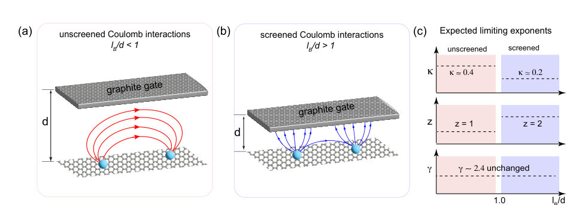
<figcaption class="paper-figure-caption"><b>Fig 1.</b> Figure 1. Screening-controlled crossover in quantum-critical scaling. Schematic of the interaction range</figcaption>
</figure>
<figure class="paper-figure-card">
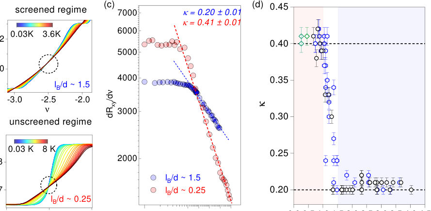
<figcaption class="paper-figure-caption"><b>Fig 2.</b> Figure 2. Temperature scaling of quantum-critical transport. Rxy as a function of filling factor ν across</figcaption>
</figure>
<figure class="paper-figure-card">
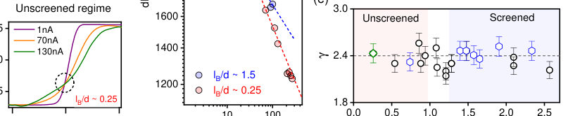
<figcaption class="paper-figure-caption"><b>Fig 3.</b> Figure 3. Current scaling separates the dynamical and spatial critical exponents. Rxy as a function of</figcaption>
</figure>
<figure class="paper-figure-card">
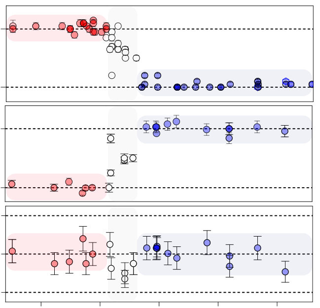
<figcaption class="paper-figure-caption"><b>Fig 4.</b> Figure 4. Evolution of the extracted exponents with lB/d. Compilation of the experimentally extracted</figcaption>
</figure>
</div>

<p><strong>Summary.</strong> This work uses graphene devices to study quantum Hall transitions by tuning Coulomb screening via gate geometry. By combining temperature and current scaling measurements, the authors successfully separated the dynamical exponent ($z$) from the localization exponent ($\gamma$). They show that screening selectively alters $z$ while leaving $\gamma$ constant, providing a versatile method for controlling interactions in correlated electron systems.</p>
<p><strong>Why it may be interesting.</strong> The ability to geometrically tune interaction strength (screening) provides a powerful experimental tool to isolate the role of electron-electron interactions versus disorder effects in strongly correlated 2D systems.</p>
<details>
<summary>Detailed structure</summary>
<p><strong>Main problem.</strong> The study aims to experimentally separate the effects of Coulomb interactions on spatial versus dynamical criticality at continuous electronic phase transitions in the quantum Hall regime.</p>
<p><strong>Main result.</strong> Gate-controlled screening selectively modifies the interaction-dependent dynamical sector (changing $z$ from $\approx 1$ to $\approx 2$) while leaving the localization-length exponent ($\gamma \approx 2.4$) unchanged.</p>
<p><strong>Method.</strong> The authors combine temperature scaling analysis with independent current scaling measurements on transport properties ($R_{xy}, R_{xx}$) to extract critical exponents separately.</p>
<p><strong>Model / system.</strong> The experiment uses dual-graphite-gated graphene devices, where the effective Coulomb interaction range is tuned geometrically by varying the ratio of the magnetic length ($l_B$) to a gate distance ($d$).</p>
<p><strong>Key observables.</strong> Temperature scaling exponent ($\kappa$), dynamical critical exponent ($z$), and localization-length exponent ($\gamma$); measured via $R_{xy}$ and $R_{xx}$ transport measurements.</p>
<p><strong>Important parameters / regimes.</strong> The ratio $l_B/d$ controls the interaction regime, distinguishing between unscreened (long-range) and screened (short-range) Coulomb interactions.</p>
<p><strong>Assumptions / limitations.</strong> The analysis relies on combining multiple scaling analyses (temperature vs. current dependence) to overcome limitations in measuring only the combined exponent $\kappa$.</p>
<p><strong>Figures summary.</strong> Figures show how temperature scaling ($\kappa$) changes across screening regimes, and plots demonstrate that current scaling allows for the independent extraction of $z$ and $\gamma$, confirming the change in $z$ while $\gamma$ remains constant.</p>
<p><strong>Paper structure.</strong> The paper introduces the problem of disentangling critical exponents, details the use of dual-graphene devices to control screening via $l_B/d$, presents results showing distinct changes in $z$ and $\kappa$ between screened and unscreened regimes, and concludes that screening selectively affects dynamics.</p>
</details>
<details>
<summary>Abstract</summary>
<p>At continuous electronic phase transitions, Coulomb interactions can modify the relation between length, energy, and temperature, but experimentally disentangling their effects on spatial versus dynamical criticality has remained difficult, since finite-temperature scaling alone measures only the combined exponent $κ= 1/(zγ)$. Here, we introduce two advances that resolve this limitation. First, by combining temperature scaling with independent current scaling, we separately extract the dynamical exponent $z$ and the localization-length exponent $γ$ at the quantum Hall plateau transition -- rather than inferring one from an assumed value of the other. Second, using dual-graphite-gated graphene devices in which the effective Coulomb interaction range is tuned geometrically by the ratio of the magnetic length $l_B$ to the graphite-gate distance $d$, we track this separation across both screened and unscreened interaction regimes within the same device platform. Temperature scaling gives $κ\simeq 0.21$ in the screened regime and $κ\simeq 0.41$ in the unscreened regime; combining this with current scaling reveals that screening changes $z$ from $\simeq 1$ in the unscreened regime to $\simeq 2$ in the screened regime. In contrast, $γ$ remains close to $2.4$ throughout. Our results establish that gate-controlled screening selectively modifies the interaction-dependent dynamical sector of the quantum Hall transition, leaving the localization-length exponent $γ$ unchanged within experimental uncertainty. More broadly, this work establishes geometric screening as a versatile tool for controlling interactions and disentangling interaction and disorder effects in correlated two-dimensional systems, including fractional quantum Hall states, moiré materials, and other strongly localized electronic phases.</p>
</details>
<p><sub><a href="#top">↑ back to top</a></sub></p>

<p><a id="paper-2607.09663"></a></p>
<h3 id="phase-switchable-nonreciprocal-entanglement-via-magnon-squeezing-in-ring-cavity-optomagnomechanics"><a href="http://arxiv.org/abs/2607.09663v1">Phase-switchable nonreciprocal entanglement via magnon squeezing in ring-cavity optomagnomechanics</a></h3>
<p><strong>Authors:</strong> Z. Imara, A. El Allati, A. Belfakir, K. El Anouz, I. P. Castillo<br>
<strong>Type:</strong> theory · <strong>Category:</strong> other · <strong>PDF:</strong> <a href="https://arxiv.org/pdf/2607.09663v1">https://arxiv.org/pdf/2607.09663v1</a><br>
<strong>Analysis basis:</strong> full PDF text, analyzed in chunks
<strong>Topic relevance:</strong> 🔥 <code>spintronics-quantum-optics interface</code> <strong>5/5</strong> · 🔥 <code>entanglement &amp; information structure</code> <strong>4/5</strong> · 🔥 <code>exotic spin models in light-matter</code> <strong>4/5</strong> · <code>analog quantum simulation</code> <strong>3/5</strong> · <code>correlated / nonlocal dissipation</code> <strong>3/5</strong> · <code>correlated cavity matter</code> <strong>3/5</strong> · <code>driven-dissipative phase transition</code> <strong>3/5</strong> · <code>Keldysh / 2PI / non-Gaussian methods</code> <strong>2/5</strong> · <code>Tavis-Cummings &amp; cavity-many-emitter</code> <strong>2/5</strong> · <code>methods for driven-dissipative</code> <strong>2/5</strong> · <code>non-equilibrium dynamics</code> <strong>2/5</strong> · <code>interference shaping light</code> <strong>1/5</strong> · <code>non-equilibrium universality</code> <strong>1/5</strong> · <code>quantum optics experiment</code> <strong>1/5</strong></p>
<div class="figure-strip-hint">↔ Scroll figures horizontally</div>
<div class="paper-figures-scroll">
<figure class="paper-figure-card">
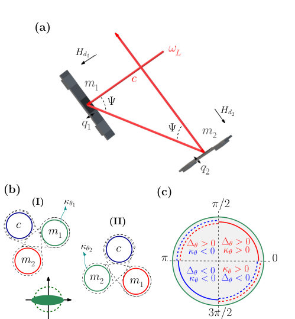
<figcaption class="paper-figure-caption"><b>Fig 1.</b> FIG. 1: (a) Schematic of the optomagnomechanical ring-cavity. (b) Sketch of optomagnonic bipartite en- tanglement for the two magnon-squeezing scenarios considered in this work, labeled (I)-(II); green modes indicate the squeezed magnon modes with amplitude Γj and phase θj. (c) Simplified schematic illustrating how changing the squeezing-phase sign modifies the effective magnon detuning and damping rate, enabling phase-controlled dissipation engineering.</figcaption>
</figure>
<figure class="paper-figure-card">
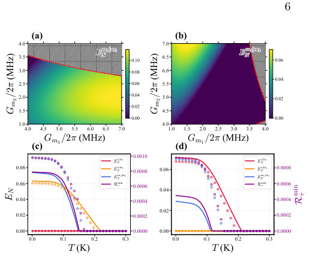
<figcaption class="paper-figure-caption"><b>Fig 2.</b> FIG. 3: Density plots of magnon-magnon entanglement Em1|m2 N versus (Gm1, Gm2) for (a) scenario I and (b) sce- nario II. Temperature dependence for (c) scenario I and (d) scenario II showing cavity-magnon entanglement Ec|m1 N (red), Ec|m2 N (orange), magnon-magnon entanglement Em1|m2 N (blue), and tripartite entanglement Rmin N (pur- ple) versus bath temperature T. Moreover, we set θ = π/2 and θ = 3π/2 for solid and circles lines, respectively. Other parameters are the same as in Fig. 2.</figcaption>
</figure>
<figure class="paper-figure-card">
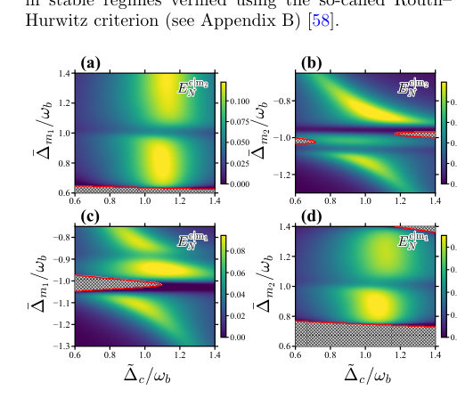
<figcaption class="paper-figure-caption"><b>Fig 3.</b> FIG. 2: Density plots of cavity-magnon entanglement (a-b) Ec|m2 N for scenario I and (c-d) Ec|m1 N for scenario II versus (a,c) ( ˜∆c, ∆m1), (b,d) ( ˜∆c, ∆m2), where ˜∆c is the effective cavity detuning and ∆mj is the intrinsic de- tuning of magnon j. The red boundary indicates stability. For scenario I, we set: Gm1/2π = 5 MHz, Gm2/2π = 1 MHz. While, in scenario II, we set Gm1/2π = 1 MHz, Gm2/2π = 5 MHz. See Table .I for other parameters.</figcaption>
</figure>
<figure class="paper-figure-card">
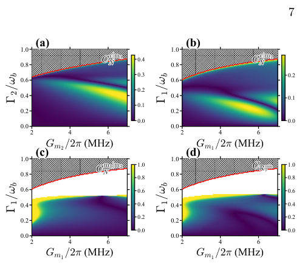
<figcaption class="paper-figure-caption"><b>Fig 4.</b> FIG. 5: Nonreciprocal contrast versus coupling and squeezing. Bidirectional contrast ratios (a) Cc|m1 E (scenario II), (b) Cc|m2 E (scenario I), (c) Cm1|m2 E (scenario I), and (d) Cmin R (scenario I) versus magnomechanical coupling Gmj and squeezing strength Γj, where j = 1, 2 denotes which magnon is squeezed. The red boundary indicates stability. Other parameters are the same as in Fig. 2.</figcaption>
</figure>
<figure class="paper-figure-card">
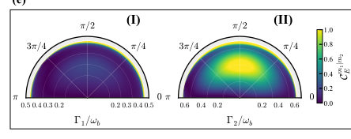
<figcaption class="paper-figure-caption"><b>Fig 5.</b> FIG. 4: Nonreciprocal contrasts Cm1|m2 E and Cmin R for (a,c) scenario I and (b,d) scenario II versus Γ1,2/ωb. Non- reciprocity is revealed by comparing θ and θ + π, with θ = π/4, π/3, π/2, and 3π/4. (e) Density plots of Cm1|m2 E as a function of (θ, Γj/ωb) for scenario I and scenario II. Other parameters are the same as in Fig. 2.</figcaption>
</figure>
</div>

<p><strong>Summary.</strong> The paper proposes using magnon squeezing in an optomagnomechanical ring cavity to generate switchable, nonreciprocal bipartite and tripartite entanglement. By controlling the phase of the magnon squeezing, researchers can reverse key system parameters, offering a robust method to tune quantum correlations without physical reconfiguration. This establishes magnon squeezing as a powerful, controllable resource for advanced quantum information processing in solid-state systems.</p>
<p><strong>Why it may be interesting.</strong> This work is highly relevant as it merges concepts from cavity QED, magnonics, and optomechanics to create a controllable quantum resource. The ability to switch entanglement using only a phase shift ($   heta    o   heta+\pi$) provides an advanced degree of tunability for hybrid quantum platforms.</p>
<details>
<summary>Detailed structure</summary>
<p><strong>Main problem.</strong> The goal is to generate and control switchable nonreciprocal entanglement using magnon squeezing within a cavity optomagnomechanical system.</p>
<p><strong>Main result.</strong> The proposed phase-tuning method successfully demonstrates high-contrast, switchable bipartite and tripartite entanglement by exploiting the sign reversal of effective detuning and damping rates upon a $\pi$ phase shift.</p>
<p><strong>Method.</strong> The theoretical framework involves linearizing quantum Langevin equations around steady states to analyze fluctuations, followed by calculating entanglement measures like logarithmic negativity and residual contangle.</p>
<p><strong>Model / system.</strong> The system is an optomagnomechanical ring cavity coupling two ferrimagnetic YIG microbridges (magnons) to a common optical cavity mode and mechanical oscillators. The dynamics are governed by a complex Hamiltonian involving various detunings, couplings, and the phase-controlled magnon squeezing terms.</p>
<p><strong>Key observables.</strong> Nonreciprocal entanglement is quantified using normalized contrast ratios ($C_E$ and $C_{\mathcal{R}}$), while bipartite entanglement uses logarithmic negativity ($E^N$) and tripartite entanglement uses residual contangle ($R^N$).</p>
<p><strong>Important parameters / regimes.</strong> The control mechanism relies on the phase ($    heta_j$) of the magnon squeezing, which dictates the sign reversal of effective detuning shifts ($\Delta  heta_j$) and quadrature-damping contributions ($\kappa_{    heta j}$). Stability analysis is crucial, requiring all eigenvalues of the drift matrix to have negative real parts.</p>
<p><strong>Assumptions / limitations.</strong> The analysis assumes a low-excitation regime for magnon populations and neglects bending-related displacements in the mechanical modes. Furthermore, stability requires operating within parameter regimes where the Routh–Hurwitz criterion is satisfied.</p>
<p><strong>Figures summary.</strong> Figure 1 schematically illustrates the system setup and shows how phase change modifies detuning ($\Delta	heta$) and damping rate ($\kappa_	heta$). Figure 7 maps out stable operational regions in parameter space based on squeezing phases ($  heta_j$ and $\Gamma_j$).</p>
<p><strong>Paper structure.</strong> The paper first introduces the physical platform and Hamiltonian, then derives the linearized quantum Langevin equations. It proceeds to analyze stability conditions using Routh–Hurwitz criteria before calculating entanglement measures (logarithmic negativity/residual contangle) and demonstrating the phase-switchable nonreciprocity.</p>
</details>
<details>
<summary>Abstract</summary>
<p>Cavity optomagnomechanics provides a versatile platform to explore macroscopic quantum correlations, particularly nonreciprocal entanglement. In this work, we propose a theoretical scheme to generate switchable bipartite and tripartite entanglement in an optomagnomechanical ring cavity by exploiting phase-controlled magnon squeezing. Indeed, two spatially separated ferrimagnetic YIG microbridges become entangled through their magnetostriction-mediated coupling to mechanical motion and a common cavity field via radiation-pressure interaction. The squeezing process introduces two phase-dependent contributions to the magnon response, namely an effective detuning shift $Δ_{θ_j}$ and a quadrature-damping contribution $κ_{θ_j}$, both of which reverse sign upon a $π$ phase shift, providing an in situ control to switch the entanglement response. The nonreciprocal entanglement is defined operationally through the asymmetric entanglement response under the phase reversal $θ_j \to θ_j + π$, quantified by normalized contrast ratios $C_E$ and $C_{\mathcal{R}}$, which measure the relative difference between the entanglement obtained at $θ_j$ and at the phase-reversed configuration $θ_j+π$. The resulting phase-tuning method provides a flexible and robust route to achieve high-contrast bipartite and tripartite entanglement within stable parameter regions, establishing magnon squeezing as a practical quantum resource for switchable quantum correlations in hybrid platforms.</p>
</details>
<p><sub><a href="#top">↑ back to top</a></sub></p>

<p><a id="paper-2607.09247"></a></p>
<h3 id="observation-of-a-rydberg-atom-time-crystal-with-an-ultralong-lifetime"><a href="http://arxiv.org/abs/2607.09247v1">Observation of a Rydberg-atom time crystal with an ultralong lifetime</a></h3>
<p><strong>Authors:</strong> Qi-Feng Wang, Tian-Yu Han, Ya-Jun Wang, Dong-Yang Zhu, Chao Yu, Yu Ma, Yi-Ming Yin, Guang-Can Guo, Bang Liu, Li-Hua Zhang, Dong-Sheng Ding, Bao-Sen Shi<br>
<strong>Type:</strong> experiment · <strong>Category:</strong> other · <strong>PDF:</strong> <a href="https://arxiv.org/pdf/2607.09247v1">https://arxiv.org/pdf/2607.09247v1</a><br>
<strong>Analysis basis:</strong> full PDF text, analyzed in chunks
<strong>Topic relevance:</strong> 🔥 <code>driven-dissipative phase transition</code> <strong>5/5</strong> · 🔥 <code>analog quantum simulation</code> <strong>4/5</strong> · 🔥 <code>correlated / nonlocal dissipation</code> <strong>4/5</strong> · <code>Rydberg arrays</code> <strong>3/5</strong> · <code>methods for driven-dissipative</code> <strong>3/5</strong> · <code>non-equilibrium dynamics</code> <strong>3/5</strong> · <code>non-equilibrium universality</code> <strong>3/5</strong> · <code>Keldysh / 2PI / non-Gaussian methods</code> <strong>2/5</strong> · <code>quantum optics experiment</code> <strong>2/5</strong> · <code>entanglement &amp; information structure</code> <strong>1/5</strong> · <code>scars &amp; prethermalization</code> <strong>1/5</strong></p>
<div class="figure-strip-hint">↔ Scroll figures horizontally</div>
<div class="paper-figures-scroll">
<figure class="paper-figure-card">
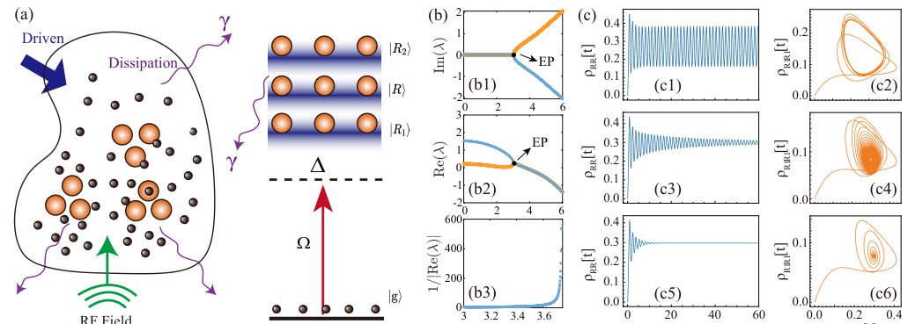
<figcaption class="paper-figure-caption"><b>Fig 1.</b> Figure 1. Diagram of the many-body system and simulations. (a) Schematic diagram of the drive-dissipation system, incorporating laser and RF field driving as well as the system’s intrinsic dissipation. The simplified energy diagram of the system consists of a ground state |g⟩and three Rydberg states |R⟩, |R1⟩and |R2⟩dressed by RF-field. Ωis the Rabi frequency coupling the ground state and Rydberg state with the laser, ∆is the detuning between the laser and the atomic resonant transition, and γ is the decay rate of the Rydberg energy levels. (b) Near zero frequency, the simulated imaginary part of the Liouvillian eigenspectrum scales as (b1), the real part as (b2), and the critical behavior...</figcaption>
</figure>
<figure class="paper-figure-card">
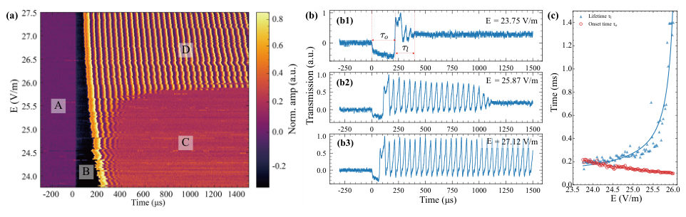
<figcaption class="paper-figure-caption"><b>Fig 2.</b> Figure 2. Measured CTC criticality and lifetime versus the RF-field amplitude. (a) Measured transmission after a step driving field is suddenly switched on at t = 0. A uniform field E = Vpp/d is applied across two parallel plates separated by d = 4 cm, and its amplitude is scanned over E = 23.75–27.5 V/m; the color scale shows the normalized transmission amplitude. Four regimes are labeled: (A) before the field is applied (t &lt; 0), where no oscillation occurs; (B) the field is on but the time crystal has not yet formed, defining the onset time τo; (C) the time crystal has formed with a finite lifetime τl that increases with E; and (D) the time crystal persists throughout the record, its...</figcaption>
</figure>
<figure class="paper-figure-card">
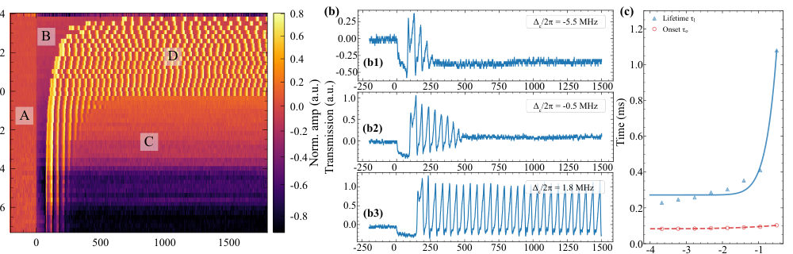
<figcaption class="paper-figure-caption"><b>Fig 3.</b> Figure 3. Measured criticality and lifetime of CTC versus the laser detuning. (a) Measured transmission dynamics under the driving of a step RF-field with E = 26.5 V/m at t = 0. The laser detuning ∆c is scanned over −2π × 7.3 to 2π × 4.0 MHz; the color scale represents the normalized transmission amplitude. The system exhibits four regimes: no time crystal (A), onset regime (B), fast-decay regime (C), long-lived regime (D). (b) Normalized transmission time traces extracted from (a) at ∆c = −2π × 5.5 MHz (b1), −2π × 0.5 MHz (b2), and 2π × 1.8 MHz (b3). The oscillation is short-lived at red detuning (b1), persists for a finite time before decaying near resonance (b2), and exhibits long-lived...</figcaption>
</figure>
<figure class="paper-figure-card">
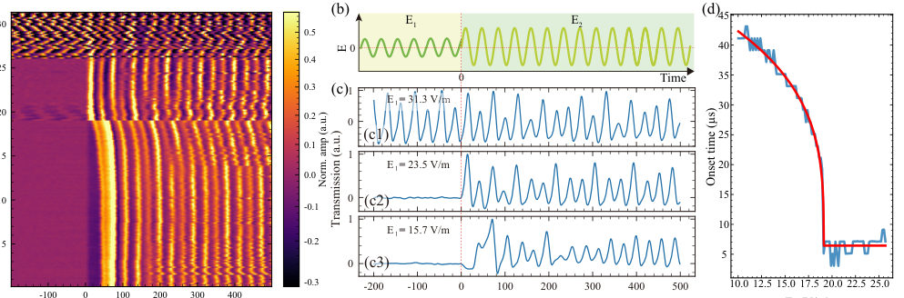
<figcaption class="paper-figure-caption"><b>Fig 4.</b> Figure 4. Initial-state-dependent onset dynamics. (a) Probe transmission versus time as the amplitude of the RF-field E1 is scanned from 0 to 31.3 V/m for t ≤0 and E2 = 31.3 V/m for t &gt; 0; the color scale gives the normalized transmission amplitude. The different values of E1 affect the evolution of the system at t &gt; 0. (b) Schematic of the two-stage driving protocol: E1 prepares the initial state for t &gt; 0 and is switched at t = 0 to a fixed amplitude E2 = 31.3 V/m with the same frequency of 8.2 MHz. (c) Transmission traces at three values of E1 (labeled in each panel), peak-normalized to emphasize the onset and waveform profiles rather than absolute amplitudes; the red dashed line marks t...</figcaption>
</figure>
<figure class="paper-figure-card">
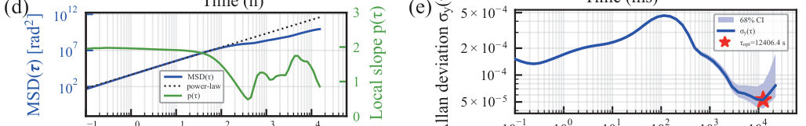
<figcaption class="paper-figure-caption"><b>Fig 5.</b> Figure 5. Measurement of the ultralong-lived CTC. (a) Short-time Fourier-transform spectrogram of the probe- transmission signal over a 61,020-s analysis window. The oscillation remains centered near f0 = 15.03 kHz, with a maximum frequency offset of 30.5 Hz. The spectral power is normalized to its maximum. (b) Oscillation-amplitude stability over the full lifetime. The red curve shows the 10-s local mean, and the shaded band denotes the local ±1σ fluctuation. The ampli- tude remains near its typical value throughout the measurement, with a total variation of about 10.1%. (c) Representative waveforms at t = 10 s, 30000 s, and 60000 s. Each 1.5-ms trace is independently normalized to show...</figcaption>
</figure>
</div>

<p><strong>Summary.</strong> The researchers successfully observed a Continuous Time Crystal (CTC) using Rydberg atoms, achieving an unprecedentedly long lifetime exceeding 16.95 hours. They achieved this by engineering the dissipative environment to stabilize the system's limit-cycle dynamics against typical decay mechanisms. This work establishes a powerful platform for studying robust, autonomous non-equilibrium quantum phases.</p>
<p><strong>Why it may be interesting.</strong> This work is highly relevant as it pushes the boundaries of open quantum systems physics by experimentally realizing and stabilizing an exotic, non-equilibrium quantum phase (DTC) in a controllable atomic platform (Rydberg atoms).</p>
<details>
<summary>Detailed structure</summary>
<p><strong>Main problem.</strong> The primary goal is observing and understanding Continuous Time Crystals (CTCs), which are non-equilibrium quantum phases that spontaneously break time-translation symmetry without periodic external driving.</p>
<p><strong>Main result.</strong> The authors reported the observation of an ultralong-lived Rydberg-atom CTC with a lifetime exceeding 16.95 hours, significantly surpassing previous realizations.</p>
<p><strong>Method.</strong> The study uses theoretical analysis based on the Lindblad master equation and experimental measurements involving controlled optical pumping and external RF fields to stabilize the limit-cycle dynamics.</p>
<p><strong>Model / system.</strong> The system is a Rydberg-atom ensemble interacting via long-range van der Waals forces, driven by coherent laser/RF fields in a dissipative environment. The dynamics are modeled using the Lindblad master equation.</p>
<p><strong>Key observables.</strong> CTC behavior (persistent oscillations), oscillatory lifetime ($    au_l$), and onset time ($  au_o$).</p>
<p><strong>Important parameters / regimes.</strong> External RF field amplitude ($E$) and laser detuning ($\Delta_c$); achieving a near-zero real part of the Liouvillian eigenspectrum is key.</p>
<p><strong>Assumptions / limitations.</strong> The analysis relies on a mean-field treatment, which neglects inter-atomic correlations due to atomic thermal motion.</p>
<p><strong>Figures summary.</strong> Figures illustrate system diagrams, energy level structures, time evolution simulations under varying decay rates, and plots showing measured CTC criticality and lifetime dependence on applied electric field amplitude or laser detuning.</p>
<p><strong>Paper structure.</strong> The paper introduces the concept of CTCs, details the theoretical framework using the Lindblad master equation and Liouvillian spectrum analysis, presents experimental measurements demonstrating the long-lived limit cycle phase, and concludes by establishing a robust platform for studying autonomous non-equilibrium phases.</p>
</details>
<details>
<summary>Abstract</summary>
<p>Continuous time crystals (CTCs) represent a nonequilibrium quantum phase that spontaneously breaks time-translation symmetry without periodic external driving, manifesting as persistent, long-lived oscillations under steady pumping. The lifetime is constrained by the instability of the limit cycle phase, balanced between nonlinear feedback and energy dissipation, which have rarely been studied in experiments before. Here, we report an observation of an ultralong-lived Rydberg-atom CTC in a driven-dissipative many-body atomic system. By harnessing long-range interactions and engineering a dissipative environment that stabilizes the limit-cycle dynamics, we suppress heating and decay effects that typically destroy time-crystalline order. The key factor underlying the ultralong-lived CTC is the closing of the Liouvillian gap and the near-zero real part of the system's Liouvillian eigenspectrum. Through systematic optimization, we achieve an oscillatory lifetime exceeding 16.95 hours-orders of magnitude longer than previous CTC realizations. Our work establishes a robust platform for exploring long-lived autonomous nonequilibrium phases and paves the way for applications in quantum sensing and continuous-time quantum information processing.</p>
</details>
<p><sub><a href="#top">↑ back to top</a></sub></p>

<p><a id="paper-2607.08967"></a></p>
<h3 id="probing-two-spin-entanglement-at-quantum-criticality-on-a-quantum-processor"><a href="http://arxiv.org/abs/2607.08967v1">Probing two-spin entanglement at quantum criticality on a quantum processor</a></h3>
<p><strong>Authors:</strong> Anshumitra Baul, Xiao Xiao, Phillip C. Lotshaw<br>
<strong>Type:</strong> both · <strong>Category:</strong> other · <strong>PDF:</strong> <a href="https://arxiv.org/pdf/2607.08967v1">https://arxiv.org/pdf/2607.08967v1</a><br>
<strong>Analysis basis:</strong> full PDF text, analyzed in chunks
<strong>Topic relevance:</strong> 🔥 <code>entanglement &amp; information structure</code> <strong>5/5</strong> · 🔥 <code>analog quantum simulation</code> <strong>4/5</strong> · <code>QC/QI experiment</code> <strong>3/5</strong> · <code>exotic spin models in light-matter</code> <strong>3/5</strong> · <code>quantum measurements</code> <strong>2/5</strong> · <code>driven-dissipative phase transition</code> <strong>1/5</strong> · <code>methods for driven-dissipative</code> <strong>1/5</strong> · <code>non-equilibrium dynamics</code> <strong>1/5</strong> · <code>non-equilibrium universality</code> <strong>1/5</strong></p>
<div class="figure-strip-hint">↔ Scroll figures horizontally</div>
<div class="paper-figures-scroll">
<figure class="paper-figure-card">
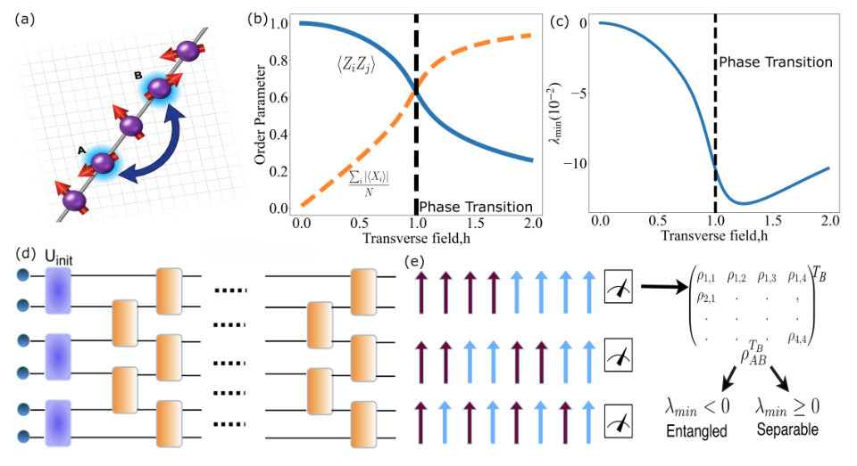
<figcaption class="paper-figure-caption"><b>Fig 1.</b> FIG. 1: (a) Schematic 1D spin-model used to investigate two-spin entanglement on the quantum hardware. (b) Evolution of the ferromagnetic ⟨ZiZi+1⟩and polarized phase P</figcaption>
</figure>
<figure class="paper-figure-card">
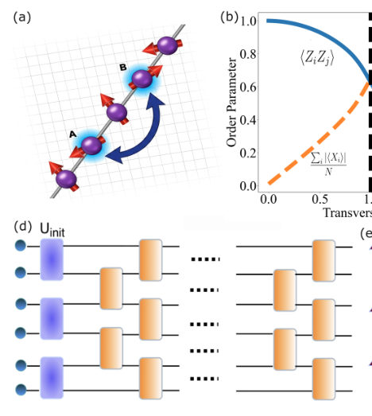
<figcaption class="paper-figure-caption"><b>Fig 2.</b> Fig. 1 outlines the main ideas of this work. We implement a generic entanglement witness to quan- tify two-spin entanglement in quantum computa- tions, taking quantum simulations of spin chains as a target example (Fig. 1(a)). The spin chains un- dergo a QPT as a control parameter, such as a mag- netic field, is varied. The phase transition realizes a change in order parameter, for example as shown in Fig. 1(b). Near the transition point, the ground state becomes highly entangled. We argue the PPT criterion provides a practical and scalable witness of the resulting entanglement in quantum simula- tions, as seen in its peak near the phase transition point in Fig. 1(c). We demonstrate that...</figcaption>
</figure>
<figure class="paper-figure-card">
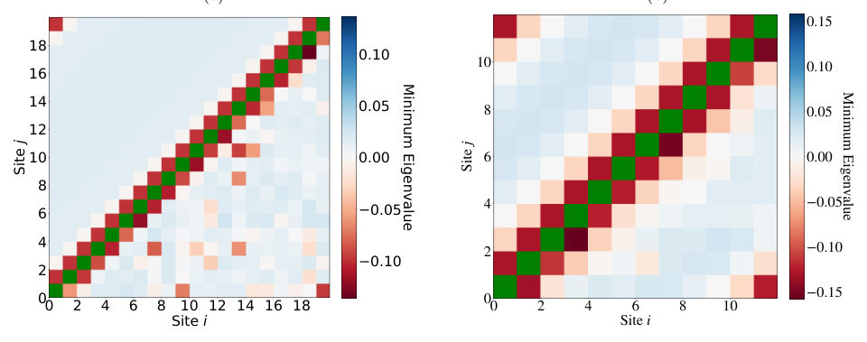
<figcaption class="paper-figure-caption"><b>Fig 3.</b> FIG. 2: Heatmaps of the PPT entanglement witness for all spin pairs (i, j) near the critical points of the 1D systems, with λmin &lt; 0 (orange,red) indicating entanglement. The upper panels show the unmitigated λmin and the lower panels show the λmin after error mitigation. (a,c) TFIM at h = 1.0 and (b,d) XXZ at ∆= −0.68. The plots are partitioned into two regions for direct benchmarking: the upper-left triangle (j &gt; i) represents the exact results obtained from MPS calculations, while the lower-right triangle (i &gt; j) displays experimental results measured on quantum hardware. The green diagonal corresponds to identical sites (i = j), where a pairwise reduced density matrix cannot be defined....</figcaption>
</figure>
<figure class="paper-figure-card">
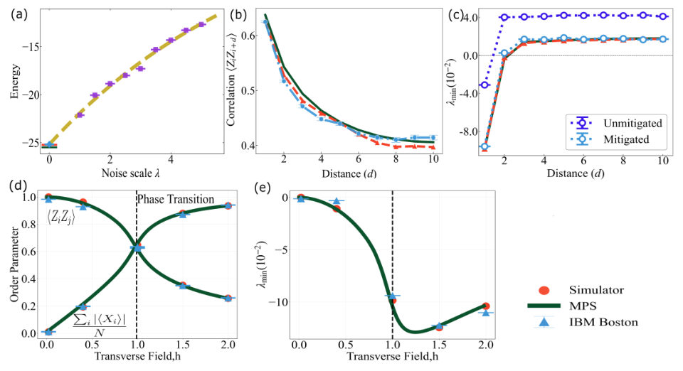
<figcaption class="paper-figure-caption"><b>Fig 4.</b> FIG. 3: Physical properties of the critical TFIM from quantum simulations. (a) The energy is extrapolated to the zero-noise limit (λ = 0) in close agreement with MPS benchmarks (green/orange lines at lower left signify MPS/Simulator result respectively). (b) The power law decay of longitudinal correlations ⟨ZiZi+d⟩ with distance d confirms that the hardware accurately captures the spatial structure of the state, despite cumulative gate noise. (c) Pairwise entanglement of nearest neighbors is witnessed by the minimum eigenvalue λmin of the partially transposed density matrix; applying error mitigation successfully shifts hardware results below the zero-threshold to match the ideal ground...</figcaption>
</figure>
<figure class="paper-figure-card">
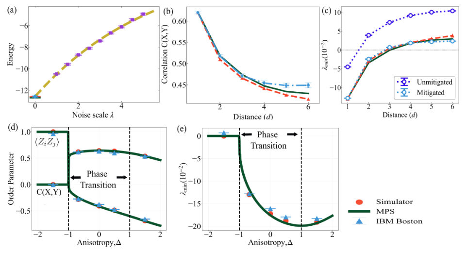
<figcaption class="paper-figure-caption"><b>Fig 5.</b> FIG. 4: Quantum simulation results for the XXZ model analogous to Fig. 3 (green/orange lines at lower left signify MPS/Simulator result respectively). (a) Energy estimation of the XXZ at ∆= −0.68. (b) Long range transverse correlation C(X, Y ) = (⟨XiXi+d⟩+ ⟨YiYi+d⟩)/2 with distance d. (c) λmin witnesses entanglement for nearest- and next-nearest neighbor pairs (d = 1, 2). (d) The change in ⟨ZiZj⟩and C(X, Y ) = 1</figcaption>
</figure>
</div>

<p><strong>Summary.</strong> This paper develops and demonstrates the use of the Positive Partial Transpose (PPT) criterion as a scalable method to measure two-spin entanglement in many-body systems undergoing quantum phase transitions. By combining this diagnostic tool with variational quantum circuits, the authors successfully map out entanglement patterns across critical points on actual quantum hardware, comparing results rigorously against theoretical benchmarks.</p>
<p><strong>Why it may be interesting.</strong> This work bridges fundamental condensed matter theory (QPTs, entanglement) with near-term quantum computation capabilities. The use of a robust witness like PPT makes it highly relevant for characterizing complex quantum phases on noisy hardware.</p>
<details>
<summary>Detailed structure</summary>
<p><strong>Main problem.</strong> The primary goal is characterizing two-spin entanglement, particularly at quantum critical points in many-body systems, using noisy quantum hardware.</p>
<p><strong>Main result.</strong> The Positive Partial Transpose (PPT) criterion serves as an efficient and scalable witness that successfully detects pairwise entanglement across quantum phase transitions on near-term quantum devices.</p>
<p><strong>Method.</strong> The authors combine the PPT criterion with Overlapping State Tomography to measure reduced density matrices ($
ho_{AB}$) for spin pairs, while preparing critical states using variational quantum circuits.</p>
<p><strong>Model / system.</strong> The study focuses on 1D spin chains modeled by Hamiltonians like the Transverse-Field Ising Model (TFIM) and the XXZ model. These systems are simulated across varying control parameters to induce Quantum Phase Transitions (QPTs).</p>
<p><strong>Key observables.</strong> Minimum eigenvalue ($\lambda_{\min}$) of the partial transpose, correlation functions ($\langle Z_i Z_{i+d} 
angle$, $C(X, Y)$), and fidelity of state preparation.</p>
<p><strong>Important parameters / regimes.</strong> Quantum critical points (e.g., specific values of magnetic field $h$ or anisotropy $\Delta$), system size ($N=12, 20$), and noise levels.</p>
<p><strong>Assumptions / limitations.</strong> Traditional entanglement measures like Entanglement Entropy are difficult to interpret for mixed/noisy states; the PPT criterion is chosen specifically because it remains robust in such conditions.</p>
<p><strong>Figures summary.</strong> Figures illustrate the evolution of order parameters across QPTs, show the PPT criterion peaking near criticality, and present heatmaps comparing measured correlation functions and minimum eigenvalues ($\lambda_{\min}$) against DMRG benchmarks for both TFIM and XXZ models under noise extrapolation.</p>
<p><strong>Paper structure.</strong> The paper systematically develops the theoretical framework (PPT witness), applies it to specific spin models (TFIM/XXZ) using variational circuits for state preparation, and then validates the measurement protocol by comparing hardware results against high-accuracy DMRG benchmarks across various phase transitions.</p>
</details>
<details>
<summary>Abstract</summary>
<p>Quantum phase transitions in many-body systems give rise to highly entangled states, and understanding their quantum correlations is crucial for characterizing quantum materials. However, traditional entanglement measures such as entanglement entropy are difficult to interpret for noisy or mixed states and require complex circuits to evaluate. Therefore, we explore the Positive Partial Transpose (PPT) criterion, coupled with overlapping state tomography, as an efficient and scalable spin-spin entanglement witness. It detects pairwise entanglement from reduced density matrices, distinguishes quantum from classical correlations, and applies to both pure and mixed states. It is ideal for studying condensed matter systems prepared on noisy quantum devices as well as future extensions to finite temperatures. We demonstrate the approach on quantum hardware, using variational circuits to prepare quantum critical states with up to 20 qubits and completely map their two-spin entanglement across various quantum phase transitions.</p>
</details>
<p><sub><a href="#top">↑ back to top</a></sub></p>

<p><a id="paper-2607.09620"></a></p>
<h3 id="non-equilibrium-economics-a-physicists-point-of-view"><a href="http://arxiv.org/abs/2607.09620v1">Non-Equilibrium Economics: A Physicist's Point of View</a></h3>
<p><strong>Authors:</strong> Jean-Philippe Bouchaud<br>
<strong>Type:</strong> theory · <strong>Category:</strong> disordered systems and neural networks · <strong>PDF:</strong> <a href="https://arxiv.org/pdf/2607.09620v1">https://arxiv.org/pdf/2607.09620v1</a><br>
<strong>Analysis basis:</strong> full PDF text, analyzed in chunks
<strong>Topic relevance:</strong> 🔥 <code>non-equilibrium dynamics</code> <strong>5/5</strong> · 🔥 <code>non-equilibrium universality</code> <strong>4/5</strong> · <code>driven-dissipative phase transition</code> <strong>3/5</strong> · <code>methods for driven-dissipative</code> <strong>3/5</strong> · <code>Frenkel-Kontorova</code> <strong>1/5</strong> · <code>Keldysh / 2PI / non-Gaussian methods</code> <strong>1/5</strong> · <code>correlated / nonlocal dissipation</code> <strong>1/5</strong> · <code>exotic spin models in light-matter</code> <strong>1/5</strong></p>
<div class="figure-strip-hint">↔ Scroll figures horizontally</div>
<div class="paper-figures-scroll">
<figure class="paper-figure-card">
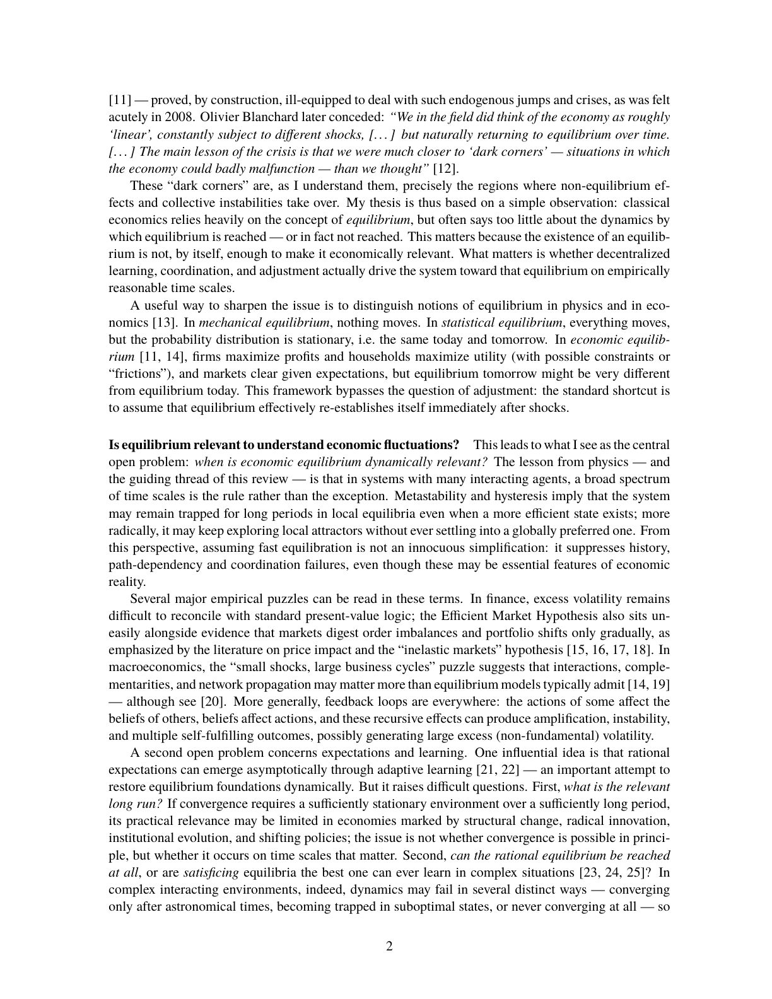
<figcaption class="paper-figure-caption"><b>Fig 1.</b> Low-resolution page preview, page 2</figcaption>
</figure>
<figure class="paper-figure-card">
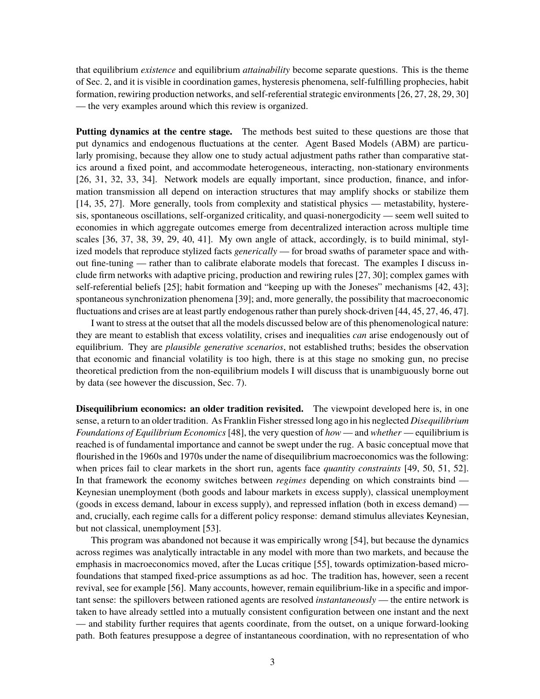
<figcaption class="paper-figure-caption"><b>Fig 2.</b> Low-resolution page preview, page 3</figcaption>
</figure>
<figure class="paper-figure-card">
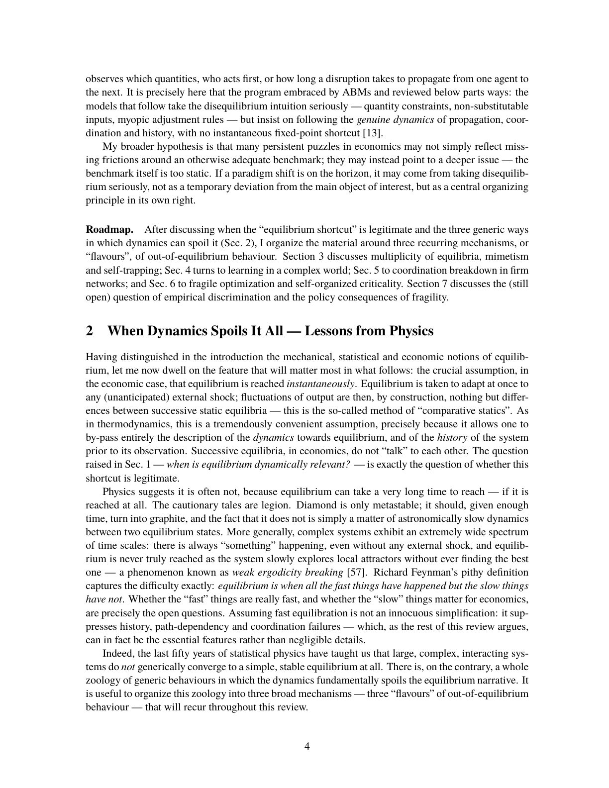
<figcaption class="paper-figure-caption"><b>Fig 3.</b> Low-resolution page preview, page 4</figcaption>
</figure>
<figure class="paper-figure-card">
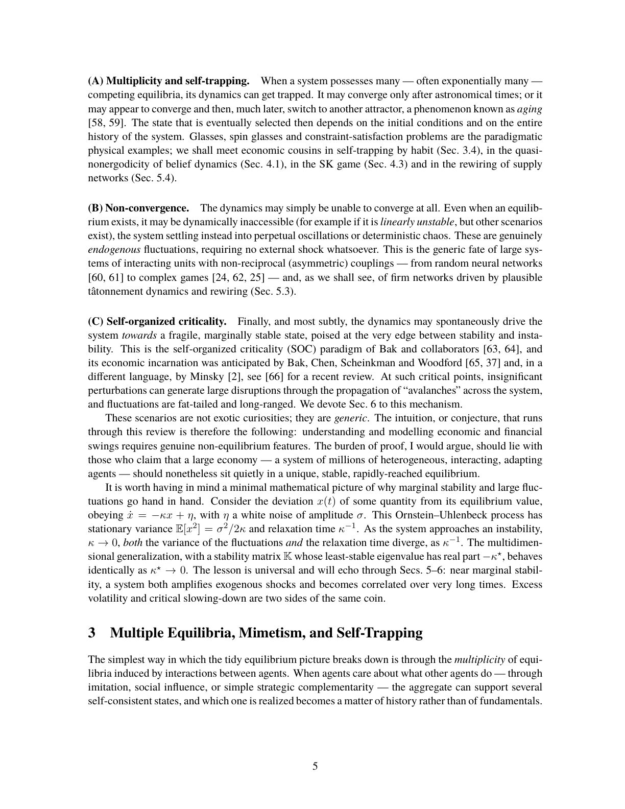
<figcaption class="paper-figure-caption"><b>Fig 4.</b> Low-resolution page preview, page 5</figcaption>
</figure>
<figure class="paper-figure-card">
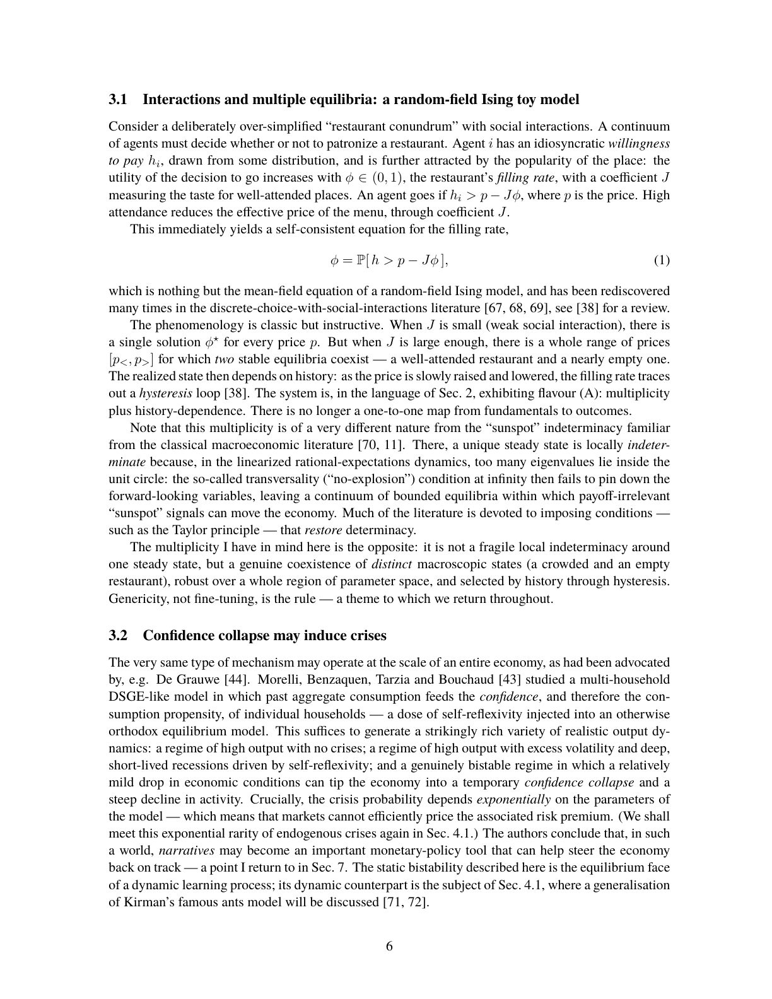
<figcaption class="paper-figure-caption"><b>Fig 5.</b> Low-resolution page preview, page 6</figcaption>
</figure>
</div>

<p><strong>Summary.</strong> This review argues that mainstream economics' reliance on equilibrium assumptions fails to explain recurring financial crises. By adopting a physicist's viewpoint, the author shows how complex, interacting systems naturally exhibit instability and crashes through mechanisms like path-dependence and self-organized criticality when operating far from equilibrium.</p>
<p><strong>Why it may be interesting.</strong> It directly applies advanced concepts from disordered systems—such as glassy dynamics, spin-glass theory, and self-organized criticality—to model macroscopic emergent behavior in a non-physical domain, which is highly relevant to understanding critical transitions in many physical systems.</p>
<details>
<summary>Detailed structure</summary>
<p><strong>Main problem.</strong> The primary problem is understanding the origin of financial crises, bubbles, and economic instability by questioning the applicability of equilibrium concepts in complex systems.</p>
<p><strong>Main result.</strong> Non-equilibrium dynamics—such as path dependence, trapping in multiple equilibria, or self-organized criticality—can naturally generate observed phenomena like excess volatility and endogenous crashes without requiring large external shocks.</p>
<p><strong>Method.</strong> The review synthesizes insights from stylized 'toy' models and concepts drawn from statistical physics (e.g., spin glasses, SOC) to analyze system behavior away from fixed points.</p>
<p><strong>Model / system.</strong> The focus is on complex, interacting systems like financial markets or social networks, modeled using analogies to glassy systems, mean-field equations, and agent-based simulations.</p>
<p><strong>Key observables.</strong> Excess volatility, endogenous crises/crashes, persistent inequalities, hysteresis loops, and power-law distributions (avalanches).</p>
<p><strong>Important parameters / regimes.</strong> The degree of interaction strength ($J$), the relaxation rate ($\kappa$), and initial conditions that determine which equilibrium state is reached.</p>
<p><strong>Assumptions / limitations.</strong> The core assumption challenged is that economic systems instantaneously reach a stable, predictable equilibrium following any shock. The models are noted as phenomenological scenarios rather than fully calibrated theories.</p>
<p><strong>Paper structure.</strong> The paper builds an argument by first establishing the puzzle (crises), then critiquing the equilibrium assumption using physics concepts (metastability, SOC), and finally detailing specific mechanisms (trapping, non-convergence) that generate complex dynamics.</p>
</details>
<details>
<summary>Abstract</summary>
<p>Financial and economic history is strewn with bubbles and crashes, booms and busts, crises and upheavals of all sorts. Understanding the origin of these events is arguably one of the most important problems in economic theory: are economies intrinsically unstable, and can one <code>stabilize unstable economies''? In this review I argue, from a physicist's vantage point, that the concept of equilibrium -- so central to mainstream economic thinking -- is likely to be the exception rather than the rule in large, complex, interacting systems. Drawing on a series of stylized</code>toy'' models, I show how excess volatility, endogenous crises and crashes, inflation swells and persistent inequalities can all emerge naturally from genuinely out-of-equilibrium dynamics, without invoking large exogenous shocks. Three generic mechanisms recur throughout: trapping in a multiplicity of history-dependent equilibria; the impossibility of dynamically reaching equilibrium, leading to oscillations and chaos; and the spontaneous evolution towards fragile, marginally stable states -- the self-organized criticality paradigm. I stress that these are phenomenological scenarios rather than calibrated theories: there is, at this stage, no ``smoking gun''. But the burden of proof, I contend, should be on the equilibrium camp.</p>
</details>
<p><sub><a href="#top">↑ back to top</a></sub></p>

<p><a id="paper-2607.09373"></a></p>
<h3 id="deterministic-generation-of-linear-photonic-cluster-states-with-semiconductor-quantum-dots-a-detailed-comparison-of-different-schemes"><a href="http://arxiv.org/abs/2607.09373v1">Deterministic Generation of Linear Photonic Cluster States with Semiconductor Quantum Dots: A Detailed Comparison of Different Schemes</a></h3>
<p><strong>Authors:</strong> Nikolas Köcher, Stefan Schumacher<br>
<strong>Type:</strong> theory · <strong>Category:</strong> quantum information and computing · <strong>PDF:</strong> <a href="https://arxiv.org/pdf/2607.09373v1">https://arxiv.org/pdf/2607.09373v1</a><br>
<strong>Analysis basis:</strong> full PDF text, analyzed in chunks
<strong>Topic relevance:</strong> 🔥 <code>spintronics-quantum-optics interface</code> <strong>4/5</strong> · <code>Tavis-Cummings &amp; cavity-many-emitter</code> <strong>3/5</strong> · <code>analog quantum simulation</code> <strong>3/5</strong> · <code>correlated cavity matter</code> <strong>3/5</strong> · <code>exotic spin models in light-matter</code> <strong>3/5</strong> · <code>correlated / nonlocal dissipation</code> <strong>2/5</strong> · <code>driven-dissipative phase transition</code> <strong>2/5</strong> · <code>entanglement &amp; information structure</code> <strong>2/5</strong> · <code>methods for driven-dissipative</code> <strong>2/5</strong> · <code>non-equilibrium dynamics</code> <strong>2/5</strong> · <code>Keldysh / 2PI / non-Gaussian methods</code> <strong>1/5</strong> · <code>QC/QI experiment</code> <strong>1/5</strong> · <code>non-equilibrium universality</code> <strong>1/5</strong> · <code>quantum measurements</code> <strong>1/5</strong> · <code>quantum optics experiment</code> <strong>1/5</strong></p>
<div class="figure-strip-hint">↔ Scroll figures horizontally</div>
<div class="paper-figures-scroll">
<figure class="paper-figure-card">
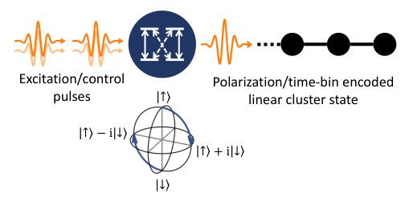
<figcaption class="paper-figure-caption"><b>Fig 1.</b> FIG. 1. Schematic of the cluster state generation process. Periodic driving of the emitter, interspersed with qubit rota- tions, leads to the generation of an entangled string of either polarization or time-bin entangled photons.</figcaption>
</figure>
<figure class="paper-figure-card">
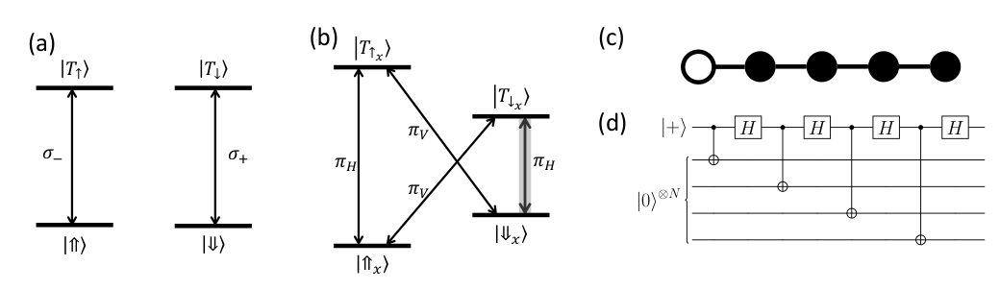
<figcaption class="paper-figure-caption"><b>Fig 2.</b> FIG. 2. (a) Level scheme and selection rules for a singly positively charged QD without an external magnetic field. (b) Selection rules for the same QD, but with an external in-plane magnetic field Bx. The transition |⇓x⟩↔|T↓x⟩marked in light gray is selectively cavity enhanced. (c) Graphical depiction of a five qubit linear cluster state, obtained after four cycles of entangled photon generation. The first vertex represents the emitter, while the solid vertices each represent a photonic qubit, which may be polarization or time-bin encoded. A Z-measurement on the emitter removes its vertex from the graph and leaves a purely photonic cluster state. (d) Circuit diagram representation of the...</figcaption>
</figure>
<figure class="paper-figure-card">
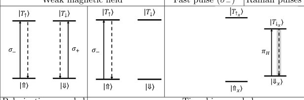
<figcaption class="paper-figure-caption"><b>Fig 3.</b> FIG. 3. Overview of the four linear cluster state generation schemes we investigate: The original LR scheme using spin precession and polarization encoding (1), the LR scheme adapted for time-bin encoding (2) and two schemes using time-bin encoding and optical spin control via an ultrafast pulse (3) or via Raman pulses (4).</figcaption>
</figure>
<figure class="paper-figure-card">
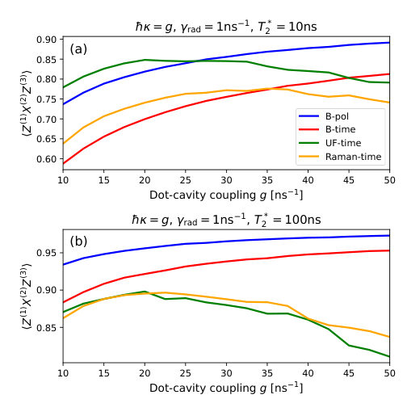
<figcaption class="paper-figure-caption"><b>Fig 4.</b> FIG. 4. Comparison of ⟨Z(1)X(2)Z(3)⟩for the cluster state generation schemes in dependence of the dot-cavity coupling g for different hole spin coherence times T ∗ 2 = 10 ns (a) and T ∗ 2 = 100 ns (b).</figcaption>
</figure>
<figure class="paper-figure-card">
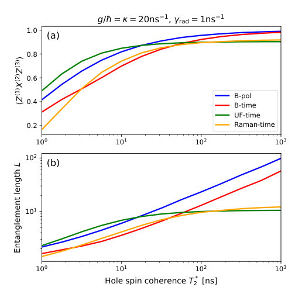
<figcaption class="paper-figure-caption"><b>Fig 5.</b> FIG. 5. Comparison of ⟨Z(1)X(2)Z(3)⟩(a) and of the entan- glement length L (b) for the different schemes in dependence of the hole spin coherence time T ∗ 2 .</figcaption>
</figure>
</div>

<p><strong>Summary.</strong> This paper theoretically compares four distinct methods for deterministically generating linear photonic cluster states using semiconductor quantum dots coupled to optical cavities. By analyzing the impact of various error mechanisms, it provides a crucial 'regime map' guiding researchers on whether magnetic-field-driven or optically controlled protocols are best suited based on material coherence times and cavity quality.</p>
<p><strong>Why it may be interesting.</strong> It provides a detailed, quantitative comparison of multiple quantum control schemes in solid-state emitters, mapping out an operational regime map based on fundamental material parameters like coherence time and cavity enhancement.</p>
<details>
<summary>Detailed structure</summary>
<p><strong>Main problem.</strong> The primary goal is the deterministic generation of linear photonic cluster states, which are crucial resource states for measurement-based quantum computation.</p>
<p><strong>Main result.</strong> Spin-precession based schemes show natural robustness against phonon decoherence and scale well with strong cavity enhancement, while optical control schemes perform better under lower spin coherence times.</p>
<p><strong>Method.</strong> The authors theoretically compare four distinct generation protocols by modeling the system dynamics using a microscopic approach involving Hamiltonian simulation and calculating photonic correlation functions.</p>
<p><strong>Model / system.</strong> The physical platform is a semiconductor quantum dot (QD) acting as a deterministic photon emitter coupled to an optical microcavity. The model details hole spin states, trion states, and incorporates coupling strengths, decay rates, and decoherence mechanisms.</p>
<p><strong>Key observables.</strong> Fidelity tracking using photonic correlation functions ($ar{g}^{(2)}$, $ar{g}^{(3)}$) and the expectation values of stabilizer generators ($\langle X(1)Z(2) 
angle$, etc.).</p>
<p><strong>Important parameters / regimes.</strong> Hole spin coherence time ($T_2^*$), cavity coupling strength ($g$), Purcell enhancement, and cooperativity of the cycling transition.</p>
<p><strong>Assumptions / limitations.</strong> The comparison is made for a singly positively charged QD; some schemes are assumed to be immune to phonon decoherence while others are highly dependent on specific decay channels.</p>
<p><strong>Figures summary.</strong> Figure 1 schematically shows cluster state generation via periodic driving. Figure 2 details the level scheme and selection rules, showing circuit diagrams for the protocols. Figure 3 compares the four investigated schemes (B-pol, B-time, UF-time, Raman-time).</p>
<p><strong>Paper structure.</strong> The paper develops from outlining the need for deterministic cluster state generation to detailing the physical control mechanisms (spin precession vs. optical pulses), and finally quantifies the resulting photonic entanglement using stabilizer formalism metrics.</p>
</details>
<details>
<summary>Abstract</summary>
<p>Photonic graph states are key resource states for measurement based quantum information processing. As semiconductor quantum dots are excellent deterministic photon emitters, several protocols using them for the generation of linear cluster states have been proposed, either based on constant precession of a hole or electron spin in a weak magnetic field, or based on optical spin control, in a stronger magnetic field. We theoretically compare four such schemes, using polarization or time-bin encoding, respectively, for a range of cavity environments and spin coherence times. In particular we study how different error mechanisms affect the different schemes, using a microscopic model of the spin control, the excitation and emission dynamics, and of the phonon bath. We find the spin-precession based schemes to scale well with strong cavity enhancement and to be naturally robust against phonon-induced decoherence, while the schemes using optical spin control can perform well for lower spin coherence times and are strongly dependent on the cooperativity of the cavity induced cycling transition. Our results provide a regime map for choosing between magnetic-field-driven and optically controlled protocols depending on spin coherence time, Purcell enhancement, and suppression of unwanted decay channels.</p>
</details>
<p><sub><a href="#top">↑ back to top</a></sub></p>

<p><a id="paper-2607.09513"></a></p>
<h3 id="qubit-boson-hybrid-beam-splitter-gate-with-kerr-nonlinearity-in-circuit-qed-for-many-body-dynamics"><a href="http://arxiv.org/abs/2607.09513v1">Qubit-Boson Hybrid Beam-Splitter Gate with Kerr Nonlinearity in Circuit QED for Many-Body Dynamics</a></h3>
<p><strong>Authors:</strong> Andrea Mammola, Giuseppe Di Molfetta, Quentin Schaeverbeke<br>
<strong>Type:</strong> theory · <strong>Category:</strong> other · <strong>PDF:</strong> <a href="https://arxiv.org/pdf/2607.09513v1">https://arxiv.org/pdf/2607.09513v1</a><br>
<strong>Analysis basis:</strong> full PDF text, analyzed in chunks
<strong>Topic relevance:</strong> 🔥 <code>analog quantum simulation</code> <strong>4/5</strong> · <code>Tavis-Cummings &amp; cavity-many-emitter</code> <strong>3/5</strong> · <code>correlated cavity matter</code> <strong>3/5</strong> · <code>Keldysh / 2PI / non-Gaussian methods</code> <strong>2/5</strong> · <code>QC/QI experiment</code> <strong>2/5</strong> · <code>methods for driven-dissipative</code> <strong>2/5</strong> · <code>non-equilibrium dynamics</code> <strong>2/5</strong> · <code>quantum optics experiment</code> <strong>2/5</strong> · <code>correlated / nonlocal dissipation</code> <strong>1/5</strong> · <code>driven-dissipative phase transition</code> <strong>1/5</strong> · <code>entanglement &amp; information structure</code> <strong>1/5</strong> · <code>exotic spin models in light-matter</code> <strong>1/5</strong> · <code>non-equilibrium universality</code> <strong>1/5</strong></p>
<div class="figure-strip-hint">↔ Scroll figures horizontally</div>
<div class="paper-figures-scroll">
<figure class="paper-figure-card">
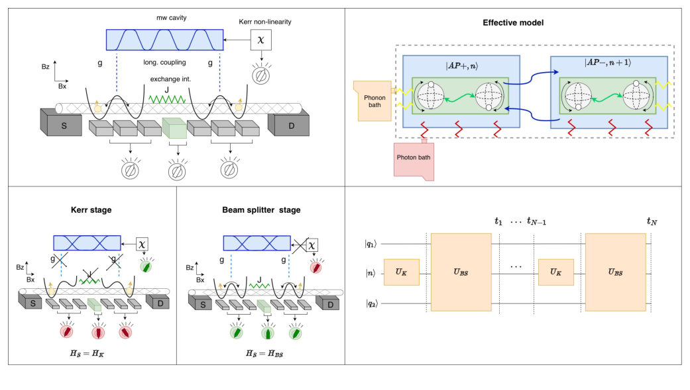
<figcaption class="paper-figure-caption"><b>Fig 1.</b> FIG. 1: Pseudo-3D schematic of a carbon-nanotube circuit-QED realization of the hybrid gate. Top left: experimental platform, where a suspended CNT above electrostatic gates defines two double quantum dots with tunable exchange interaction J, both longitudinally coupled to a microwave resonator, with a weak tunable Kerr nonlinearity χ engineered at the cavity level. Top right: effective dressed-state description in the odd-parity sector, where the states {|AP+⟩, |AP−⟩} couple to the cavity mode through an effective beam-splitter interaction, while the cavity also acquires a weak Kerr nonlinearity and the environment induces phonon- and photon-sector dissipation. Bottom left and bottom...</figcaption>
</figure>
<figure class="paper-figure-card">
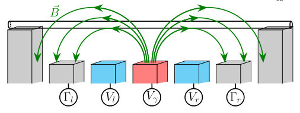
<figcaption class="paper-figure-caption"><b>Fig 2.</b> FIG. 2: Schematic representation of the CNT spin qubit. B denotes the magnetic texture, with BL(R) its projection on the left (right) dot. ε is the DQD bias energy and γ the interdot tunneling amplitude. Γj with j ∈{l, r} denote the voltages applied to the outer gates and control the DQD-contact tunneling rates. Vk with k ∈{l, γ, r} denote the voltages applied to the central gates, which control the DQD bias and tunneling energy.</figcaption>
</figure>
<figure class="paper-figure-card">
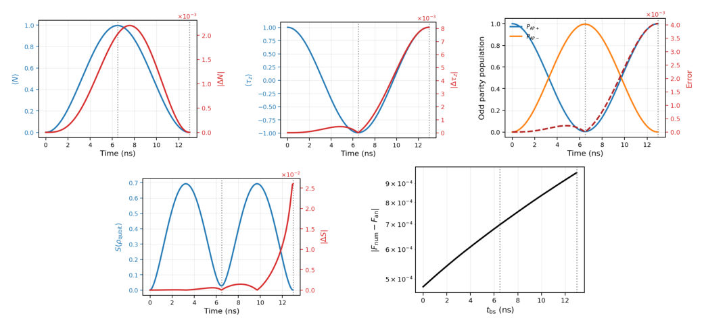
<figcaption class="paper-figure-caption"><b>Fig 3.</b> FIG. 3: Numerical benchmark of the effective open-system gate dynamics for the representative CNT cQED operating point discussed in the text, using a cavity truncation nmax = 3 and initial state |AP+, 0⟩. The top row shows pure beam-splitter evolution over two reference exchange times tref = π/(2geff). In each panel, the left axis reports the ideal trajectory, while the right axis shows the absolute deviation between noisy and ideal evolution. From left to right, the panels display the cavity occupation ⟨N⟩(t), the dressed qubit polarization ⟨τz⟩(t), and the odd-parity dressed-state populations PAP+ and PAP−. The bottom-left panel shows the reduced qubit entropy, again together with the...</figcaption>
</figure>
<figure class="paper-figure-card">
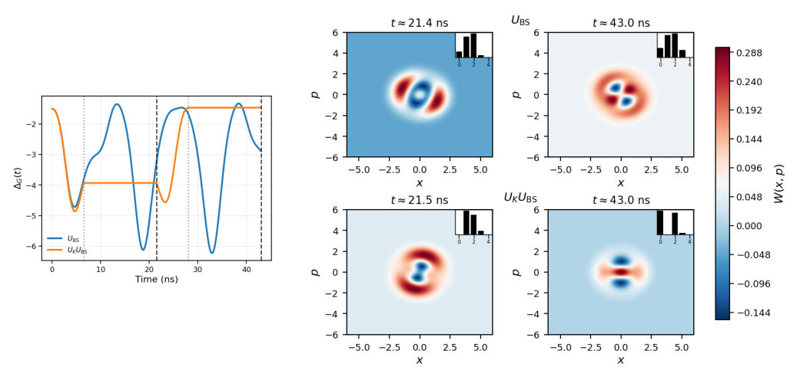
<figcaption class="paper-figure-caption"><b>Fig 4.</b> FIG. 4: Reduced cavity-state structure generated by the effective gate dynamics, for the initial state |AP+⟩⊗(|0⟩+ |2⟩)/ √</figcaption>
</figure>
</div>

<p><strong>Summary.</strong> The paper designs a novel hybrid qubit-boson beam-splitter gate using Kerr nonlinearity in circuit QED. By developing an analytical description of the gate fidelity under dissipation, it establishes this primitive as a powerful tool for modeling advanced phenomena like quantum cellular automata and lattice gauge theories.</p>
<p><strong>Why it may be interesting.</strong> This work is highly relevant as it combines advanced concepts from cavity QED, nonlinear photonics (Kerr effect), and open quantum system dynamics to engineer specific quantum gates for simulating complex many-body physics.</p>
<details>
<summary>Detailed structure</summary>
<p><strong>Main problem.</strong> The primary goal is to implement a hybrid qubit-boson beam-splitter gate for studying complex many-body dynamics, moving beyond simple virtual photon mediation.</p>
<p><strong>Main result.</strong> The authors derive an analytical expression for the average gate fidelity in the weak-dissipation regime and show that the setup provides a natural building block for simulating quantum cellular automata and lattice gauge theories.</p>
<p><strong>Method.</strong> The analysis involves deriving effective Hamiltonians via polaron transformations, developing open-system descriptions using master equations (both Born-Markov and collision models), and calculating gate fidelity in the weak-dissipation limit.</p>
<p><strong>Model / system.</strong> The system is a circuit QED setup involving two interacting qubits coupled to a microwave cavity mode with Kerr nonlinearity. The Hamiltonian includes qubit, cavity, and interaction terms ($H_S = H_Q + H_c$).</p>
<p><strong>Key observables.</strong> Average gate fidelity ($   ext{F}_{    ext{avg}}$), gate dynamics, and the effective coupling strengths.</p>
<p><strong>Important parameters / regimes.</strong> Weak-dissipation regime, Kerr nonlinearity strength ($\chi$), cavity dissipation rate ($\kappa$), and qubit/coupling parameters ($g, J$).</p>
<p><strong>Assumptions / limitations.</strong> The analysis relies on approximations such as the unresolved-Kerr regime assumption and treating gate evolution sequentially ($U = U_{BS} U_K$).</p>
<p><strong>Figures summary.</strong> Figure 1 schematically illustrates the CNT realization of the system, the effective dressed-state description, and the sequence of Kerr and beam-splitter gates.</p>
<p><strong>Paper structure.</strong> The paper progresses from deriving the general Hamiltonian in a cQED setting to applying transformations (polaron) that separate parity sectors. It then develops the open-system master equation incorporating dissipation channels before finally calculating the average gate fidelity using collision model techniques.</p>
</details>
<details>
<summary>Abstract</summary>
<p>We introduce a hybrid qubit-boson beam-splitter gate in which a microwave cavity mode couples to an exchange-dressed two-level subsystem of an interacting two-qubit system in the presence of Kerr nonlinearity. Starting from a general circuit quantum electrodynamics (cQED) model, we derive the corresponding hybrid qubit-cavity interaction, develop its open-system description including photon- and qubit-sector-bath-induced dissipation and obtain in the weak-dissipation regime an analytical expression for the average gate fidelity. We further identify carbon-nanotube circuit QED as a concrete platform for implementing and controlling the gate, provide a representative operating regime and perform noiseless and noisy numerical simulations to study the gate dynamics and benchmark the analytical results. Beyond this implementation route, the proposed hybrid primitive provides a natural building block for many-body dynamics, including quantum-cellular-automaton (QCA) and lattice-gauge-inspired architectures and, through its collision-model reformulation, also suggests connections to noisy QCA, non-Markovian extensions and reservoir-style quantum information processing.</p>
</details>
<p><sub><a href="#top">↑ back to top</a></sub></p>

<p><a id="paper-2607.08827"></a></p>
<h3 id="exact-lindbladian-dynamics-from-conformal-embeddings-and-topological-defects-in-conformal-field-theory"><a href="http://arxiv.org/abs/2607.08827v1">Exact Lindbladian Dynamics from Conformal Embeddings and Topological Defects in Conformal Field Theory</a></h3>
<p><strong>Authors:</strong> Chen Bai<br>
<strong>Type:</strong> theory · <strong>Category:</strong> statistical mechanics · <strong>PDF:</strong> <a href="https://arxiv.org/pdf/2607.08827v1">https://arxiv.org/pdf/2607.08827v1</a><br>
<strong>Analysis basis:</strong> full PDF text, analyzed in chunks
<strong>Topic relevance:</strong> 🔥 <code>methods for driven-dissipative</code> <strong>4/5</strong> · <code>Keldysh / 2PI / non-Gaussian methods</code> <strong>3/5</strong> · <code>correlated / nonlocal dissipation</code> <strong>3/5</strong> · <code>driven-dissipative phase transition</code> <strong>3/5</strong> · <code>entanglement &amp; information structure</code> <strong>2/5</strong> · <code>non-equilibrium dynamics</code> <strong>2/5</strong> · <code>non-equilibrium universality</code> <strong>2/5</strong> · <code>Kondo &amp; dissipative impurity</code> <strong>1/5</strong> · <code>analog quantum simulation</code> <strong>1/5</strong> · <code>exotic spin models in light-matter</code> <strong>1/5</strong> · <code>scars &amp; prethermalization</code> <strong>1/5</strong></p>
<div class="figure-strip-hint">↔ Scroll figures horizontally</div>
<div class="paper-figures-scroll">
<figure class="paper-figure-card">
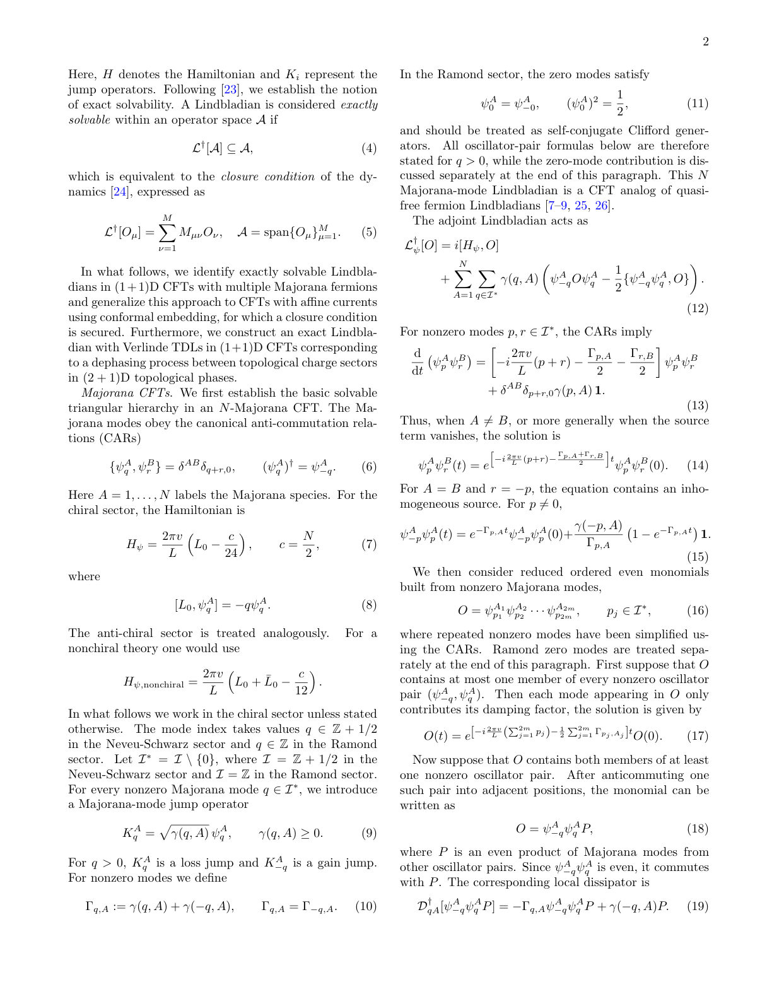
<figcaption class="paper-figure-caption"><b>Fig 1.</b> Low-resolution page preview, page 2</figcaption>
</figure>
<figure class="paper-figure-card">
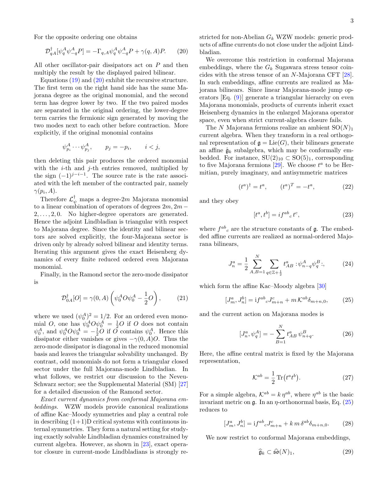
<figcaption class="paper-figure-caption"><b>Fig 2.</b> Low-resolution page preview, page 3</figcaption>
</figure>
<figure class="paper-figure-card">
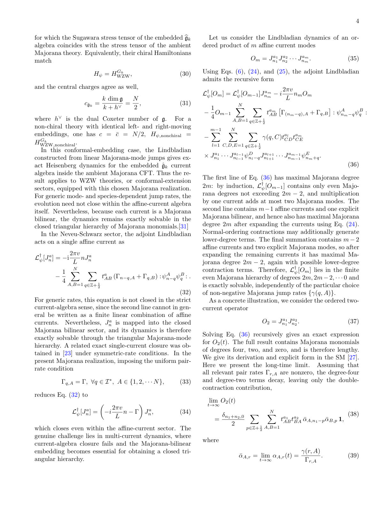
<figcaption class="paper-figure-caption"><b>Fig 3.</b> Low-resolution page preview, page 4</figcaption>
</figure>
<figure class="paper-figure-card">
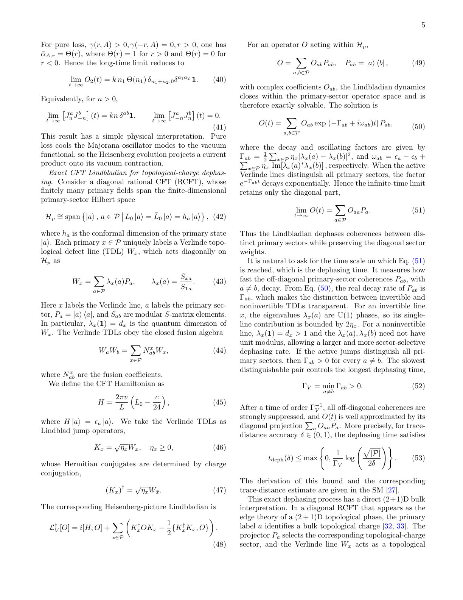
<figcaption class="paper-figure-caption"><b>Fig 4.</b> Low-resolution page preview, page 5</figcaption>
</figure>
<figure class="paper-figure-card">
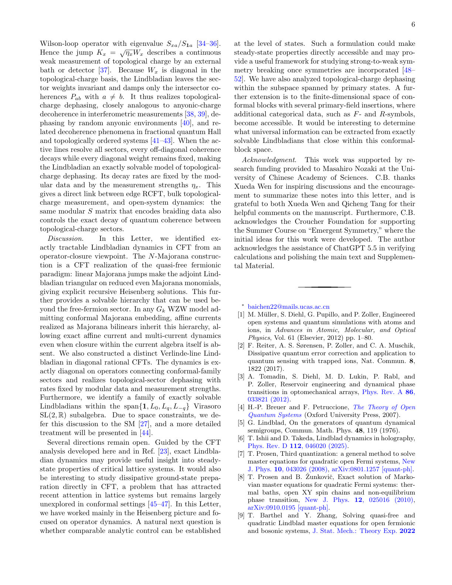
<figcaption class="paper-figure-caption"><b>Fig 5.</b> Low-resolution page preview, page 6</figcaption>
</figure>
</div>

<p><strong>Summary.</strong> This paper develops methods to find exact solutions for the dynamics of open quantum many-body systems within Conformal Field Theory. By exploiting intrinsic conformal structures—like Majorana embeddings and topological defect lines—the authors show that complex dissipative processes can be mathematically organized, leading to conserved quantities or predictable exponential decay of coherence.</p>
<p><strong>Why it may be interesting.</strong> This work provides a powerful theoretical framework for understanding how environmental coupling (dissipation) can be exactly solved in highly structured quantum systems like CFTs, offering insights applicable to open quantum systems beyond standard Markovian approximations.</p>
<details>
<summary>Detailed structure</summary>
<p><strong>Main problem.</strong> The core challenge is finding exact solutions for the dynamics of physical observables in open quantum many-body systems governed by Lindblad master equations.</p>
<p><strong>Main result.</strong> Intrinsic conformal structures, such as conformal embeddings and modular data, can organize exactly solvable open dynamics in CFTs, leading to conserved topological charges or predictable dephasing rates.</p>
<p><strong>Method.</strong> The authors employ advanced techniques from Conformal Field Theory (CFT), including analyzing Majorana fermion representations, utilizing Wess-Zumino-Witten models via conformal embeddings, and constructing Lindbladians using Verlinde topological defect lines.</p>
<p><strong>Model / system.</strong> The study focuses on (1+1)D CFTs, specifically N Majorana fermions and WZW models. The dynamics are described by the adjoint Lindbladian acting on operators within these highly constrained quantum field theories.</p>
<p><strong>Key observables.</strong> Topological-charge probabilities, intersector coherences ($P_{ab}$), expectation values of current products ($\langle \mathcal{J}^a_n \cdots 
angle$), and the trace distance $D(
ho(t), \Pi(
ho(0)))$.</p>
<p><strong>Important parameters / regimes.</strong> Modular S matrix elements, coupling rates ($\gamma_\pm$), conformal dimensions ($h$), and the dephasing rate $\Gamma_V$.</p>
<p><strong>Assumptions / limitations.</strong> The analysis relies on identifying specific intrinsic conformal structures (embeddings, defect lines) that enforce solvability; limitations are noted when general current algebra closure fails or when considering non-linear products of Virasoro generators.</p>
<p><strong>Paper structure.</strong> The paper progresses by first establishing exact solvability for Majorana fermions via triangular Lindbladians. It then extends this to WZW models using conformal embeddings, and finally analyzes diagonal RCFTs where dynamics are governed by topological defect lines leading to coherence dephasing.</p>
</details>
<details>
<summary>Abstract</summary>
<p>Analyzing the dynamics of physical observables in open quantum many-body systems is a fundamental but highly challenging task that has yielded very few exact results. In this work, we identify intrinsic conformal structures that restore exact solvability in $(1+1)$D conformal field theories. For $N$ Majorana fermions with linear mode jumps, the adjoint Lindbladian is triangular on reduced even Majorana monomials, yielding recursive exact Heisenberg evolution. In Wess-Zumino-Witten models admitting conformal Majorana embeddings, this hierarchy gives exact dynamics of affine-current products realized as Majorana bilinears, including regimes where the Kac-Moody current algebra alone does not close. In diagonal rational conformal field theories, Verlinde topological defect lines furnish jump operators whose primary-sector dynamics is exactly diagonal: topological-charge probabilities are conserved, while intersector coherences dephase at rates fixed by the modular $S$ matrix and nonnegative measurement strengths. These examples show that intrinsic conformal structures, such as conformal embeddings and modular data, can organize exactly solvable open conformal dynamics.</p>
</details>
<p><sub><a href="#top">↑ back to top</a></sub></p>

<p><a id="paper-2607.09511"></a></p>
<h3 id="majorana-parity-qubit-in-coupled-minimal-kitaev-chains"><a href="http://arxiv.org/abs/2607.09511v1">Majorana parity qubit in coupled minimal Kitaev chains</a></h3>
<p><strong>Authors:</strong> Francesco Zatelli, Bart Roovers, Nick van Loo, Antonio Lombardi, Juan D. Torres Luna, Sebastian Miles, Vincent P. M. Sietses, Florian J. Bennebroek Evertsz', Pablo Cova Fariña, Alberto Bordin, Ghada Badawy, Erik P. A. M. Bakkers, Michael Wimmer, Leo P. Kouwenhoven<br>
<strong>Type:</strong> experiment · <strong>Category:</strong> quantum information and computing · <strong>PDF:</strong> <a href="https://arxiv.org/pdf/2607.09511v1">https://arxiv.org/pdf/2607.09511v1</a><br>
<strong>Analysis basis:</strong> full PDF text, analyzed in chunks
<strong>Topic relevance:</strong> 🔥 <code>QC/QI experiment</code> <strong>4/5</strong> · <code>analog quantum simulation</code> <strong>3/5</strong> · <code>quantum measurements</code> <strong>3/5</strong> · <code>driven-dissipative phase transition</code> <strong>2/5</strong> · <code>non-equilibrium dynamics</code> <strong>2/5</strong> · <code>Kondo &amp; dissipative impurity</code> <strong>1/5</strong> · <code>correlated / nonlocal dissipation</code> <strong>1/5</strong> · <code>entanglement &amp; information structure</code> <strong>1/5</strong> · <code>measurement-induced transitions</code> <strong>1/5</strong> · <code>methods for driven-dissipative</code> <strong>1/5</strong> · <code>non-equilibrium universality</code> <strong>1/5</strong></p>
<div class="figure-strip-hint">↔ Scroll figures horizontally</div>
<div class="paper-figures-scroll">
<figure class="paper-figure-card">
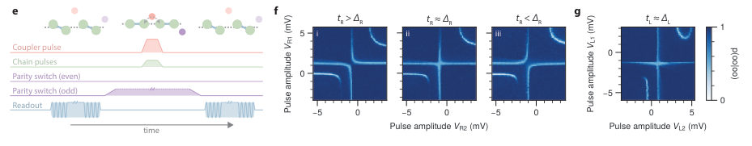
<figcaption class="paper-figure-caption"><b>Fig 1.</b> Fig. 1 Tuning a Majorana parity qubit. a, Schematic of a Majorana qubit formed by two minimal Kitaev chains. Four Majorana modes (γ1, γ2, γ3, γ4) encode the qubit, while a central quantum dot (red) mediates inter-chain coupling. A supercon- ducting segment (blue) fixes the superconducting phase φ. b, Bloch-sphere representation of the qubit in the global even parity manifold. The poles correspond to |ee⟩and |oo⟩. Rotations are generated by tuning the pairwise Majorana couplings εab. c, Example energy spectra of the computational subspace versus coupler-dot detuning at φ = 0 (top) and as a function of φ at finite coupling (bottom). The states are nearly degenerate at large detuning, while...</figcaption>
</figure>
<figure class="paper-figure-card">
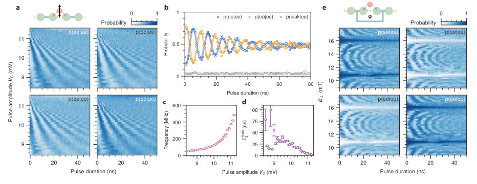
<figcaption class="paper-figure-caption"><b>Fig 2.</b> Fig. 2 Coherent control and phase dependence of the Majorana qubit. a, Conditional probabilities p(ee|ee), p(oo|ee), p(ee|oo), and p(oo|oo) as a function of coupling pulse duration and amplitude VC, showing coherent oscillations between the qubit states. b, p(ee|ee), p(oo|ee), and leakage to the odd-parity manifold as a function of pulse duration at VC = 9.8 mV. c,d, Oscillation frequency (c) and Rabi decay time T Rabi 2 (d) extracted from panel a as a function of VC. e, p(ee|ee), p(oo|ee), p(ee|oo), and p(oo|oo) as a function of pulse duration and out-of-plane magnetic field B⊥which controls φ. The oscillation frequency is strongly suppressed near φ = π, where inter-chain coupling vanishes.</figcaption>
</figure>
<figure class="paper-figure-card">
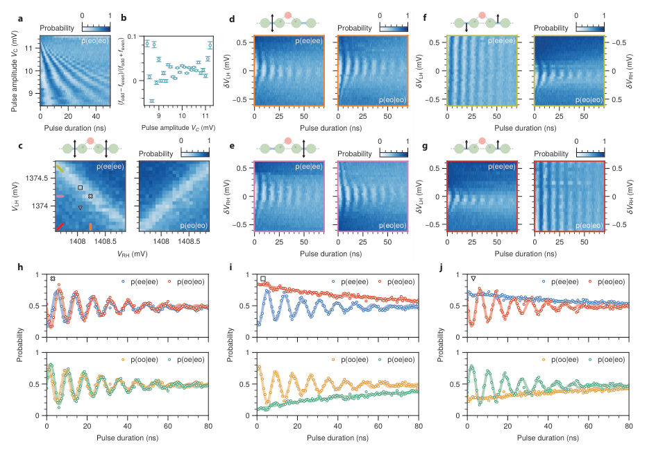
<figcaption class="paper-figure-caption"><b>Fig 3.</b> Fig. 3 Comparison between even and odd global parity manifolds. a, p(eo|eo) as a function of pulse duration and amplitude VC, showing coherent oscillations in the odd manifold. b, Relative frequency difference between the even- and odd- manifold oscillations as a function of VC. c, p(ee|ee) (left) and p(eo|eo) (right) as a function of the left and right hybrid-gate voltages (VLH and VRH) for a fixed pulse duration of 18 ns. Parity mixing occurs along diagonal or anti-diagonal lines depending on the global parity manifold. Their intersection (cross) identifies the Majorana sweet spot, where the resonance conditions of the even and odd manifolds coincide. The colored marks indicate sweep...</figcaption>
</figure>
<figure class="paper-figure-card">
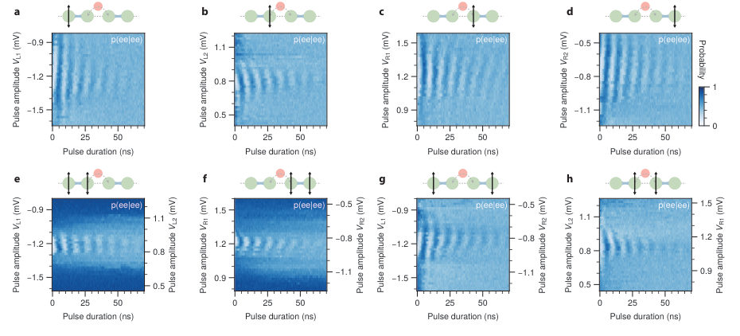
<figcaption class="paper-figure-caption"><b>Fig 4.</b> Fig. 4 Robustness of coherent parity oscillations under detuning. p(ee|ee) as a function of pulse duration for different detuning configurations, as indicated by the schematics. The coupler pulse amplitude is fixed at VC = 9.8 mV. a-d, Detuning individual quantum dots. Oscillations remain visible over a broader range of gate voltages compared to panels e-h. e,f, Detuning the left (e) and right (f) Kitaev chains. Increasing chain detuning suppresses the oscillations and stabilizes the initial state. g,h, Simultaneous detuning of the outer (g) and inner (h) quantum dots of both chains, resulting in a more rapid reduction of oscillation visibility.</figcaption>
</figure>
</div>

<p><strong>Summary.</strong> The research demonstrates the first coherent control of a Majorana qubit by engineering two coupled minimal Kitaev chains in superconducting nanowires. By observing Rabi oscillations between global even and odd parity states, the authors confirm that the system can be manipulated coherently using electrical pulsing techniques. This work advances the field by moving topological qubits from theoretical identification to measurable quantum computation.</p>
<p><strong>Why it may be interesting.</strong> This work provides direct experimental evidence of controlled quantum evolution (Rabi oscillations) using topological qubits, which is a major milestone for solid-state quantum computing architectures.</p>
<details>
<summary>Detailed structure</summary>
<p><strong>Main problem.</strong> The primary goal is to move beyond merely identifying Majorana zero modes via transport measurements and achieve genuine, coherent qubit control using these modes encoded in fermion parity.</p>
<p><strong>Main result.</strong> The authors demonstrated the first instance of coherent control over a Majorana qubit by observing measurable, Rabi-like parity oscillations in both the even and odd global parity manifolds.</p>
<p><strong>Method.</strong> Coherent dynamics were measured using pulsed charge-stability measurements, monitoring the shift in a radio-frequency resonator's resonance frequency due to parity-dependent quantum capacitance.</p>
<p><strong>Model / system.</strong> The system is realized using two coupled minimal Kitaev chains engineered in quantum dot–superconductor arrays. The physics is modeled by separating the Hamiltonian into global even and odd parity manifolds based on fermion parity conservation.</p>
<p><strong>Key observables.</strong> Coherent parity oscillations (Rabi oscillations) in both even and odd manifolds, and the systematic dependence of oscillation frequency/coherence on inter-chain coupling and detunings.</p>
<p><strong>Important parameters / regimes.</strong> Inter-chain coupling ($\epsilon_{23}$), quantum-dot detunings ($\epsilon_{12}, \epsilon_{34}$), superconducting phase ($\phi$), and magnetic field ($B_\perp$).</p>
<p><strong>Assumptions / limitations.</strong> The analysis relies on the effective Hamiltonian derived for the even/odd manifolds, and some later analyses assume first-order dependence on detuning near the sweet spot.</p>
<p><strong>Figures summary.</strong> Figures illustrate the device schematic (Fig. 1a), Bloch sphere rotations (Fig. 1b), energy spectra showing state splitting (Fig. 1c), and pulsed charge-stability diagrams mapping parity transitions ($p(oo|oo)$) as a function of gate voltages.</p>
<p><strong>Paper structure.</strong> The paper progresses from establishing the theoretical framework for the Majorana parity qubit in coupled chains, to demonstrating coherent control via parity oscillations, and finally analyzing the dependence of these dynamics on various tunable parameters like coupling strength and detuning.</p>
</details>
<details>
<summary>Abstract</summary>
<p>Majorana zero modes provide a route to fault-tolerant qubits by encoding information non-locally in fermion parity. Their sensitivity to noise is expected to decrease exponentially with increasing separation between the Majoranas, a suppression known as topological protection. Kitaev chains engineered in quantum dot-superconductor arrays provide a tunable platform in which separated Majorana zero modes can emerge at the ends of the chain, even in two-site chains. These minimal-chain modes are known as poor man's Majoranas and retain characteristic Majorana properties, including near-zero energy and equal electron-hole character, but have only limited protection. A key outstanding challenge is to move beyond identifying such modes in electrical transport measurements and achieve coherent qubit control in the time domain. Here, we demonstrate a Majorana parity qubit by realizing coherent coupling between two-site Kitaev chains. Since total fermion parity is conserved, the system separates into global even and odd parity manifolds. We observe coherent parity oscillations in both manifolds with equal oscillation frequencies at the Majorana sweet spot, as predicted for isolated Majorana zero modes. We further show that the oscillation frequency and coherence depend systematically on inter-chain coupling and quantum-dot detunings, in close agreement with our model for short, partially protected chains. Our results establish the first coherent control of a Majorana qubit, encoded in the fermion parity of Majorana zero modes in minimal Kitaev chains.</p>
</details>
<p><sub><a href="#top">↑ back to top</a></sub></p>

<p><a id="paper-2607.09118"></a></p>
<h3 id="measurement-speed-limits-for-quantum-state-purification"><a href="http://arxiv.org/abs/2607.09118v1">Measurement Speed Limits for Quantum State Purification</a></h3>
<p><strong>Authors:</strong> Jiaxin Liu, Zuoxian Wang, Danyue Ma<br>
<strong>Type:</strong> theory · <strong>Category:</strong> quantum information and computing · <strong>PDF:</strong> <a href="https://arxiv.org/pdf/2607.09118v1">https://arxiv.org/pdf/2607.09118v1</a><br>
<strong>Analysis basis:</strong> full PDF text, analyzed in chunks
<strong>Topic relevance:</strong> 🔥 <code>quantum measurements</code> <strong>4/5</strong> · <code>measurement-induced transitions</code> <strong>3/5</strong> · <code>methods for driven-dissipative</code> <strong>3/5</strong> · <code>Keldysh / 2PI / non-Gaussian methods</code> <strong>2/5</strong> · <code>entanglement &amp; information structure</code> <strong>2/5</strong> · <code>non-equilibrium dynamics</code> <strong>2/5</strong> · <code>correlated / nonlocal dissipation</code> <strong>1/5</strong> · <code>driven-dissipative phase transition</code> <strong>1/5</strong> · <code>non-equilibrium universality</code> <strong>1/5</strong></p>
<div class="figure-strip-hint">↔ Scroll figures horizontally</div>
<div class="paper-figures-scroll">
<figure class="paper-figure-card">
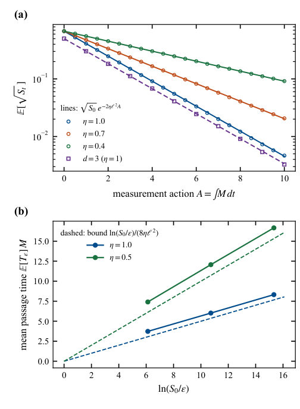
<figcaption class="paper-figure-caption"><b>Fig 1.</b> FIG. 1. Exact attainment of the limits by plain QND measurement, for a monitored qubit and a qutrit. (a) Root impurity E[√𝑆𝑡] under QND monitoring from 𝑆0 = 0.455 (𝑀= 1, ℓ= 1</figcaption>
</figure>
<figure class="paper-figure-card">
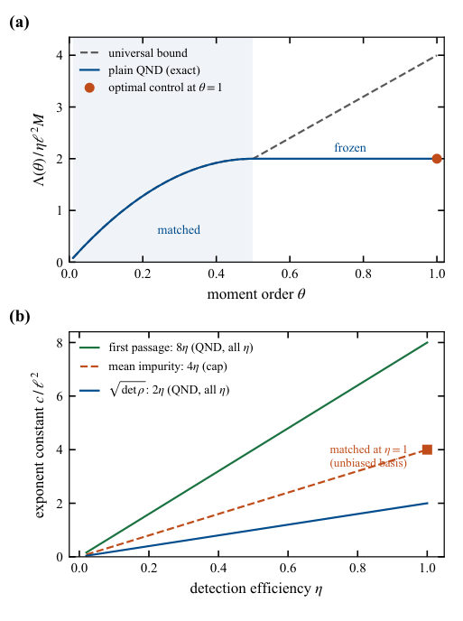
<figcaption class="paper-figure-caption"><b>Fig 2.</b> FIG. 2. Purification speed limits of a monitored qubit. (a) Moment- exponent envelope 𝑐(𝜃) of Eq. (7) (dashed) and the exact exponent of plain QND measurement, Eq. (8) (solid), both in units of 𝜂ℓ2: matched on the shaded region 𝜃≤1</figcaption>
</figure>
</div>

<p><strong>Summary.</strong> The authors establish universal, protocol-independent speed limits for purifying a mixed quantum state by monitoring it. They derive these bounds using advanced stochastic calculus techniques applied to the system's impurity measure. The results are particularly sharp for qubits, providing quantitative benchmarks against which all measurement and feedback strategies can be compared.</p>
<p><strong>Why it may be interesting.</strong> This work provides rigorous mathematical tools for quantifying fundamental physical processes in open quantum systems, directly impacting how we model measurement backaction and state preparation protocols relevant to quantum computation.</p>
<details>
<summary>Detailed structure</summary>
<p><strong>Main problem.</strong> The paper derives fundamental, protocol-independent speed limits governing how fast a mixed quantum state can be purified (i.e., driven towards a pure state). It establishes these bounds for arbitrary finite dimensions.</p>
<p><strong>Main result.</strong> Three matched speed limits are derived based on the impurity measure ($\sqrt{S}$), moment envelopes ($E[S^	heta]$), and first-passage time, all set by functionals related to the square root of the state's impurity. For qubits, these bounds are sharp and independent of measurement strategy.</p>
<p><strong>Method.</strong> The derivation employs advanced techniques including analyzing master inequalities derived from frame invariants, moment envelope analysis using Itô calculus, and optional stopping arguments on supermartingales.</p>
<p><strong>Model / system.</strong> The system is a general quantum state $
ho_t$ evolving in a $d$-dimensional Hilbert space under monitoring via a diffusive channel. The evolution is governed by an Itô stochastic master equation incorporating measurement backaction ($\eta$).</p>
<p><strong>Key observables.</strong> Impurity ($S = 1 - Tr
ho^2$), the square root of the impurity ($\sqrt{S}$), and various moments $E[S^	heta]$.</p>
<p><strong>Important parameters / regimes.</strong> Detection efficiency ($\eta$), channel strength ($M$), spectral half-spread ($\ell$), and the measurement action variable ($A$).</p>
<p><strong>Assumptions / limitations.</strong> The limits are claimed to be valid for every strategy and efficiency $\eta$ in finite dimensions $d$, though full analytical proof of optimality beyond the qubit case is noted as an ongoing challenge.</p>
<p><strong>Figures summary.</strong> Figures illustrate the exact attainment of the derived bounds, showing the decay rate of $\sqrt{S}$ and the expected measurement action required to reach a target impurity level for both qubits and qutrits under QND monitoring.</p>
<p><strong>Paper structure.</strong> The paper builds from establishing general master inequalities using frame invariants, derives dimension-independent moment envelopes via Itô calculus, and finally establishes sharp first-passage time bounds using optional stopping arguments on supermartingales to confirm the speed limits.</p>
</details>
<details>
<summary>Abstract</summary>
<p>We derive three matched speed limits on the purification of a monitored system, valid in every finite dimension and for every strategy and efficiency. All three are set by one functional, the square root of the state's impurity, whose maximal decay rate is a state-independent constant. For a qubit this reduces to the square root of the determinant, whose protocol-independent decay at unit efficiency is a sharp null test. The three rate constants stand in ratio two to four to eight, and attainment freezes at that square root, the half-moment. Numerics confirm the bounds; for the qubit, a conservation law settles the local-versus-global optimality puzzle, and doubling feedback spends exactly twice the minimum.</p>
</details>
<p><sub><a href="#top">↑ back to top</a></sub></p>

<p><a id="paper-2607.09242"></a></p>
<h3 id="quantum-stochastic-thermodynamics-of-macroscopic-systems-an-algebraic-approach"><a href="http://arxiv.org/abs/2607.09242v1">Quantum stochastic thermodynamics of macroscopic systems: an algebraic approach</a></h3>
<p><strong>Authors:</strong> Antoine Rignon-Bret, Cyril Elouard<br>
<strong>Type:</strong> theory · <strong>Category:</strong> statistical mechanics · <strong>PDF:</strong> <a href="https://arxiv.org/pdf/2607.09242v1">https://arxiv.org/pdf/2607.09242v1</a><br>
<strong>Analysis basis:</strong> full PDF text, analyzed in chunks
<strong>Topic relevance:</strong> 🔥 <code>quantum measurements</code> <strong>4/5</strong> · <code>measurement-induced transitions</code> <strong>3/5</strong> · <code>methods for driven-dissipative</code> <strong>3/5</strong> · <code>Keldysh / 2PI / non-Gaussian methods</code> <strong>2/5</strong> · <code>non-equilibrium dynamics</code> <strong>2/5</strong> · <code>correlated / nonlocal dissipation</code> <strong>1/5</strong> · <code>correlated cavity matter</code> <strong>1/5</strong> · <code>driven-dissipative phase transition</code> <strong>1/5</strong> · <code>entanglement &amp; information structure</code> <strong>1/5</strong> · <code>non-equilibrium universality</code> <strong>1/5</strong></p>
<div class="figure-strip-hint">↔ Scroll figures horizontally</div>
<div class="paper-figures-scroll">
<figure class="paper-figure-card">
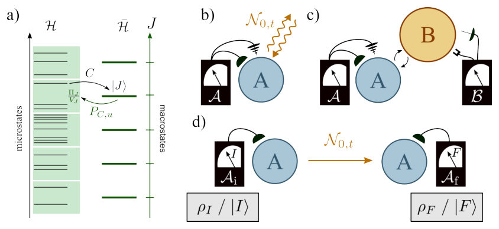
<figcaption class="paper-figure-caption"><b>Fig 1.</b> Figure 1: a) Coarse-graining and macrostate. Accessing the system via a coarse measurement leads to a statistical mixture of macrostates |J⟩∈¯H, each associated to a subspace of dimension VJ of the original system Hilbert space H associated to projector ΠJ (represented by a green shaded rectangle). The micro-macro map C maps a microstate from H onto the corresponding macrostate in ¯H. The Petz recovery map PC,u, or equivalently, Jaynes maximization principle, can be employed to recover the most probable microstate compatible with the observation, i.e. the coarse-grained state. In particular, it maps |J⟩to ΠJ</figcaption>
</figure>
<figure class="paper-figure-card">
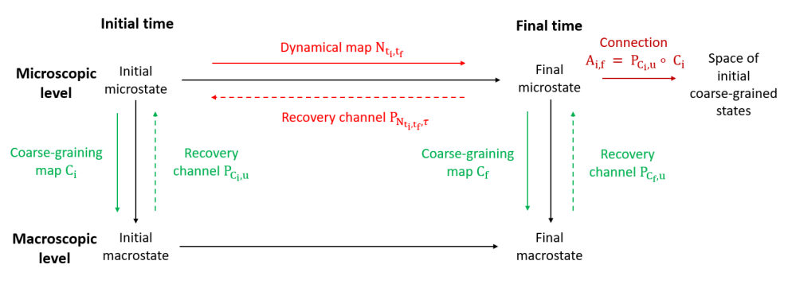
<figcaption class="paper-figure-caption"><b>Fig 2.</b> Figure 2: This diagram provides a visual representation of the framework. The vertical direction is kinematical, corresponding to successive levels of coarse-graining, whereas the horizontal direction is dynamical, corresponding to time evolution. The natural orientation of the diagram is therefore towards the right (time direction) and downwards (coarse-graining or &quot;spatial&quot; direction). Any vertex can be connected to a neighboring vertex by an arrow representing a quantum channel. The elementary arrows are given by the microscopic evolution map Nti,tf and the coarse-graining maps Ci and Cf. More general arrows are obtained by composing these elementary maps and, when necessary, reversing...</figcaption>
</figure>
<figure class="paper-figure-card">
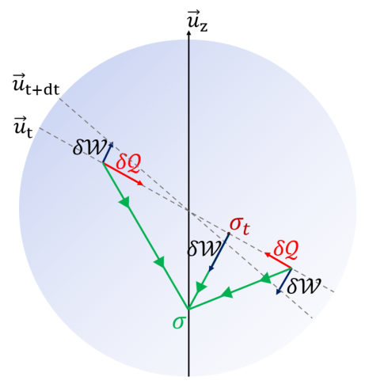
<figcaption class="paper-figure-caption"><b>Fig 3.</b> Figure 3: Thermodynamic analysis of a dissipative qubit: An arbitrary qubit state is conve- niently represented by a vector ⃗r in the Bloch sphere. We assume that the dynamics of the qubit is ruled by a GKLS equation (described explicitly in App. (E), Eq. (E.8)) inducing thermalization. The latter generates a flow (indicated by the green arrows) driving any initial state towards the thermal fixed point σ at inverse temperature β, located on the z-axis. At time t, a measurement is performed in the basis defined by the direction ⃗ut, while at time t + dt the measurement basis is rotated to ⃗ut+dt. As a qubit state cannot be coarse-grained, its observational entropy corresponds to the von...</figcaption>
</figure>
<figure class="paper-figure-card">
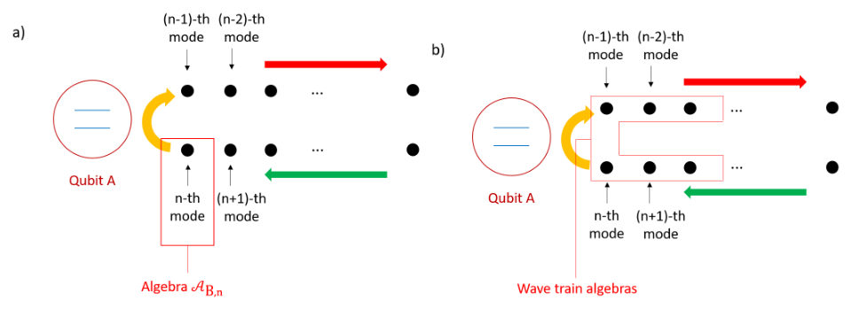
<figcaption class="paper-figure-caption"><b>Fig 4.</b> Figure 4: Application to an emitter coupled to a 1D propagating field. In the weak emitter- field coupling regime, the situation can be mapped onto a collision model [80], where the total algebra of the electromagnetic field is decomposed into temporal modes (depicted as black spheres), which are initially uncorrelated. The modes freely propagate toward the emitter A, with which they sequentially interact weakly, before being transported away. One may consider as the accessible subalgebra of the field either a) the algebra AB,n associated with a single temporal mode, or b) an algebra associated with a collection of several temporal modes, which we refer to as a wave train. The notions of...</figcaption>
</figure>
</div>

<p><strong>Summary.</strong> This paper introduces an algebraic framework for quantum stochastic thermodynamics that bypasses the need to track the full system density matrix. By focusing only on measurable observables, it defines a generalized entropy that interpolates between microscopic and macroscopic descriptions. The resulting formalism yields fundamental thermodynamic laws, including fluctuation theorems and novel work contributions from measurement backaction.</p>
<p><strong>Why it may be interesting.</strong> This is highly relevant as it provides a rigorous, algebraically grounded method for defining thermodynamic quantities (work, heat) in open quantum systems where full state knowledge is impossible, directly impacting research in quantum thermodynamics and measurement theory.</p>
<details>
<summary>Detailed structure</summary>
<p><strong>Main problem.</strong> To develop a quantum thermodynamic framework capable of describing macroscopic systems by bridging the gap between fine-grained stochastic dynamics and macroscopic equilibrium thermodynamics.</p>
<p><strong>Main result.</strong> The authors derive a generalized second law for coarse-grained dynamics that captures irreversibility from both environment interaction and internal equilibration, while also identifying an additional work term related to manipulating the system's measurement algebra.</p>
<p><strong>Method.</strong> The approach utilizes a coarse-graining formalism based on measuring only a limited set of observables (forming an accessible subalgebra), defining entropy via Jaynes' principle for this reduced description.</p>
<p><strong>Model / system.</strong> The framework applies to general macroscopic quantum systems undergoing internal or environment-induced dynamics, considering both open-system and autonomous system viewpoints.</p>
<p><strong>Key observables.</strong> Observational entropy, algebra-dependent entropy, work, heat, and the generalized entropy production rate.</p>
<p><strong>Important parameters / regimes.</strong> The nature of the coarse-graining observable set (commuting vs. non-commuting) and the path taken between initial and final measurement schemes.</p>
<p><strong>Assumptions / limitations.</strong> The primary assumption is that the system's dynamics can be effectively described by restricting attention to an accessible subalgebra of observables, thereby circumventing the need for the full density matrix.</p>
<p><strong>Figures summary.</strong> Figure 1 illustrates the mapping from microstates ($
ho$) to macrostates ($ar{
ho}$) via coarse-graining, showing viewpoints for open and autonomous systems, and demonstrating process probing using initial/final accessible algebras.</p>
<p><strong>Paper structure.</strong> The paper builds conceptually by first defining the coarse-grained entropy (especially in the commutative case), then deriving the second law and fluctuation theorems, followed by introducing work and heat increments via quasi-static transformations, and finally extending the formalism to general non-commutative observable algebras.</p>
</details>
<details>
<summary>Abstract</summary>
<p>We build a framework for the thermodynamics of macroscopic quantum systems. In contrast with approaches requiring access to the full density matrix, our framework relies on a coarse-grained description, based on measurement statistics of a few observables. When these observables commute, the outcomes define classical macrostates whose entropy is quantified by observational entropy, accounting for uncertainty about both the macrostate and the microstate within it. We extend this notion to non-commuting observables forming a subalgebra of the operator space, and use Jaynes' principle to define an algebra-dependent entropy interpolating between von Neumann and observational entropies. Given initial and final measurement sets, connected by internal and/or environment-induced dynamics, we derive a second law for the coarse-grained dynamics. Unlike formulations based on von Neumann entropy, our inequality captures irreversibility from both non-unitary environment-induced dynamics and internal equilibration. It takes the usual form of a positive entropy production when the system is initially at internal equilibrium, while correction terms capture nonequilibrium resources ignored by the coarse-graining. We also derive fluctuation theorems for coarse-grained thermodynamic quantities. Along a quasi-static path of measurement schemes, we identify quantum macroscopic notions of work and heat fulfilling the first and second laws, including an additional work contribution from manipulating the algebra to which the system is confined, through external constraints or quantum measurement backaction. Finally, we apply our framework to examples illustrating the impact of varying the coarse-graining scheme. Our approach unifies macroscopic and stochastic thermodynamics in a genuinely quantum framework, laying the basis for a versatile, experimentally friendly toolbox to analyze complex quantum dynamics.</p>
</details>
<p><sub><a href="#top">↑ back to top</a></sub></p>

<p><a id="paper-2607.09064"></a></p>
<h3 id="superheavy-dark-bright-soliton-as-a-signature-of-spatial-symmetry-breaking-transition-in-harmonically-trapped-bose-mixtures"><a href="http://arxiv.org/abs/2607.09064v1">Superheavy dark-bright soliton as a signature of spatial symmetry breaking transition in harmonically trapped Bose mixtures</a></h3>
<p><strong>Authors:</strong> Zheng Gao, Ling-Zheng Meng, Jie Liu, Li-Chen Zhao<br>
<strong>Type:</strong> theory · <strong>Category:</strong> quantum gases · <strong>PDF:</strong> <a href="https://arxiv.org/pdf/2607.09064v1">https://arxiv.org/pdf/2607.09064v1</a><br>
<strong>Analysis basis:</strong> full PDF text, analyzed in chunks
<strong>Topic relevance:</strong> 🔥 <code>analog quantum simulation</code> <strong>4/5</strong> · <code>Keldysh / 2PI / non-Gaussian methods</code> <strong>3/5</strong> · <code>driven-dissipative phase transition</code> <strong>3/5</strong> · <code>methods for driven-dissipative</code> <strong>3/5</strong> · <code>non-equilibrium dynamics</code> <strong>2/5</strong> · <code>non-equilibrium universality</code> <strong>2/5</strong> · <code>Frenkel-Kontorova</code> <strong>1/5</strong> · <code>correlated cavity matter</code> <strong>1/5</strong></p>
<div class="figure-strip-hint">↔ Scroll figures horizontally</div>
<div class="paper-figures-scroll">
<figure class="paper-figure-card">
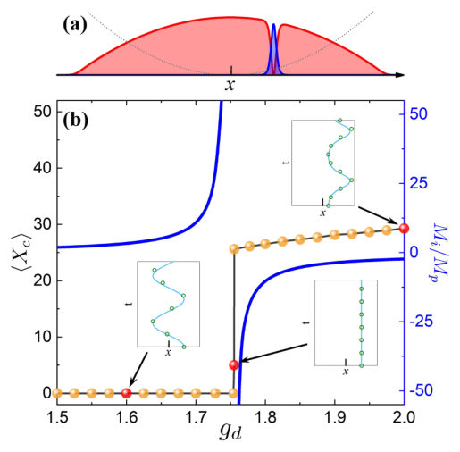
<figcaption class="paper-figure-caption"><b>Fig 1.</b> FIG. 1: Dynamics of a dark-bright soliton in a harmonic trap. (a) Schematic representation of the dark-bright soliton in the harmonic potential (dotted line). (b) Time-averaged position of the soliton ⟨Xc⟩(orange spheres) and soliton effective mass Mi/Mp (blue solid line) as functions of gd. The soliton effec- tive mass diverges and the superheavy phenomenon occurs at the threshold, indicating a phase transition between the two distinct dynamical regimes. The three insets show the real-time trajectories of the soliton at representative values gd = 1.6, 1.755, and 2 (marked by red spheres). In these insets, solid lines correspond to the analytical predictions from quasiparticle theory, and...</figcaption>
</figure>
<figure class="paper-figure-card">
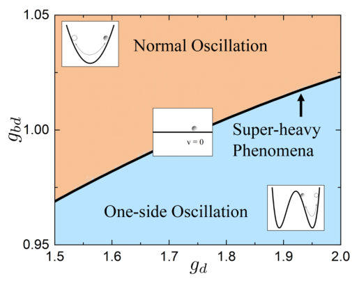
<figcaption class="paper-figure-caption"><b>Fig 2.</b> FIG. 2: Dynamical phase diagram of the dark-bright soliton in the gd-gbd parameter space. The orange and blue regions de- note the normal and one-sided oscillation phases, respectively. The black solid line marks the critical phase boundary asso- ciated with the superheavy phenomenon, where the soliton becomes completely stationary (v = 0) and which separates the two oscillatory regimes. The three insets illustrate the underlying effective potentials Ueffgoverning each dynamical regime: a single-well potential for normal oscillation, a flat potential landscape for the superheavy state, and a double- well potential for one-sided oscillation. The parameters are gb = 0.3, Nb = 4.7476, ω = 0.01,...</figcaption>
</figure>
</div>

<p><strong>Summary.</strong> The paper analyzes dark-bright solitons in trapped Bose mixtures, revealing that increasing interaction strength drives the system through a first-order phase transition. This transition causes the soliton's motion to spontaneously break spatial symmetry, characterized by an effective potential changing from a single well to a double well and the appearance of a 'superheavy' state.</p>
<p><strong>Why it may be interesting.</strong> This work provides a detailed theoretical understanding of how nonlinear interactions can induce macroscopic symmetry breaking in quantum matter waves, linking fundamental many-body physics to observable dynamical signatures like mass divergence.</p>
<details>
<summary>Detailed structure</summary>
<p><strong>Main problem.</strong> The study investigates the dynamics of dark-bright solitons in harmonically trapped two-component Bose mixtures, focusing on a spontaneous spatial symmetry breaking transition driven by nonlinear interactions.</p>
<p><strong>Main result.</strong> A critical interaction parameter causes the soliton's motion to undergo a phase transition from symmetric oscillation to asymmetric oscillation, marked by the divergence of an effective mass and the formation of a double-well potential.</p>
<p><strong>Method.</strong> The analysis employs the mean-field approximation, deriving classical kinetic equations for the soliton using a Lagrangian variational method applied to coupled Gross-Pitaevskii equations.</p>
<p><strong>Model / system.</strong> The system is a two-component Bose mixture (e.g., $^{133}	ext{Cs}$ and $^{87}	ext{Rb}$) confined in a quasi-one-dimensional harmonic trap, modeled by coupled GP equations.</p>
<p><strong>Key observables.</strong> Soliton center position ($\langle X_c 
angle$), effective soliton mass ($M_i/M_p$), and the shape of the effective potential (single well vs. double well).</p>
<p><strong>Important parameters / regimes.</strong> Interaction strengths ($g_d, g_{ij}$), harmonic trap frequency ($\omega$), and the critical interaction threshold ($g_d = 1.755$).</p>
<p><strong>Assumptions / limitations.</strong> The analysis relies on the mean-field approximation and assumes weak external traps ($\omega \ll 1$) allowing for Thomas-Fermi background density approximations.</p>
<p><strong>Figures summary.</strong> Figure 1 illustrates the dynamics showing $\langle X_c 
angle$ and $M_i/M_p$ vs. interaction strength, highlighting divergence at the critical threshold; Figure 2 shows the dynamical phase diagram in parameter space.</p>
<p><strong>Paper structure.</strong> The paper proceeds by setting up the coupled GP equations, deriving an effective Lagrangian via a variational ansatz, obtaining generalized equations of motion for the soliton's center position, and analyzing the resulting potential energy landscape across different interaction regimes.</p>
</details>
<details>
<summary>Abstract</summary>
<p>We investigate the dynamics of a dark-bright soliton in harmonically trapped two-component Bose-Einstein condensates and reveal an interesting spontaneous spatial symmetry breaking driven by nonlinear interactions. When the interaction parameter crosses a threshold value, we find that the dark-bright soliton's motion demonstrates a transition from symmetric periodic oscillation about the origin to asymmetric oscillations offset from the origin. In particular, at the transition point, the effective soliton mass, determined by the ratio of inertial mass to physical mass, diverges. The underlying mechanism is uncovered by constructing trial wave functions and employing the Lagrangian variational method to obtain an effective potential in the quasiparticle picture, which changes from a single well to a double well. The anomalous ``superheavy soliton'' phenomenon is a direct consequence of the dark-bright soliton's physical mass vanishing at the transition point. We obtain the phase diagram of this spatial symmetry-breaking transition. Possible implications of our finding for quantum metrology are discussed.</p>
</details>
<p><sub><a href="#top">↑ back to top</a></sub></p>

<p><a id="paper-2607.09411"></a></p>
<h3 id="finite-time-cooling-and-accessibility-of-the-stripe-phase-in-the-ising-antiferromagnet"><a href="http://arxiv.org/abs/2607.09411v1">Finite-time cooling and accessibility of the stripe phase in the Ising antiferromagnet</a></h3>
<p><strong>Authors:</strong> Tom Poisblaud<br>
<strong>Type:</strong> theory · <strong>Category:</strong> statistical mechanics · <strong>PDF:</strong> <a href="https://arxiv.org/pdf/2607.09411v1">https://arxiv.org/pdf/2607.09411v1</a><br>
<strong>Analysis basis:</strong> full PDF text, analyzed in chunks
<strong>Topic relevance:</strong> 🔥 <code>analog quantum simulation</code> <strong>4/5</strong> · 🔥 <code>non-equilibrium dynamics</code> <strong>4/5</strong> · <code>non-equilibrium universality</code> <strong>3/5</strong> · <code>driven-dissipative phase transition</code> <strong>2/5</strong> · <code>correlated / nonlocal dissipation</code> <strong>1/5</strong> · <code>entanglement &amp; information structure</code> <strong>1/5</strong> · <code>exotic spin models in light-matter</code> <strong>1/5</strong> · <code>methods for driven-dissipative</code> <strong>1/5</strong> · <code>scars &amp; prethermalization</code> <strong>1/5</strong></p>
<div class="figure-strip-hint">↔ Scroll figures horizontally</div>
<div class="paper-figures-scroll">
<figure class="paper-figure-card">

<figcaption class="paper-figure-caption"><b>Fig 1.</b> Figure 1. Finite-rate stripe probability P(Mf ≥0.5) in the (J2/J1, nsweeps/T) plane for L = 64, 96, 128. Markers indicate the extracted kinetic boundary n∗(L, J2/J1) obtained after isotonic regression. Increasing nsweeps/T or J2/J1 promotes global stripe selection, while the required cooling time increases with system size.</figcaption>
</figure>
<figure class="paper-figure-card">

<figcaption class="paper-figure-caption"><b>Fig 2.</b> Figure 2. Large-size kinetic-boundary estimates. The L = 160 and L = 200 data cover several couplings, while the L = 256 point is a targeted check at J2/J1 = 0.10. Error bars show bootstrap intervals obtained from 200 resamples. The weakest L = 200 coupling, J2/J1 = 0.08, crosses only near the upper end of the simulated window, and the L = 256, J2/J1 = 0.10 point confirms that global stripe selection remains costly at large size. The L = 160, J2/J1 = 0.15 point is left-censored, with n∗(160, 0.15) ≤3000.</figcaption>
</figure>
<figure class="paper-figure-card">

<figcaption class="paper-figure-caption"><b>Fig 3.</b> Figure 3. Size dependence of n∗(L, J2/J1) after inclusion of the L = 160, L = 200, and targeted L = 256 data. The L = 256 point at J2/J1 = 0.10 lies close to the quadratic extrapolation from L = 128, while the full finite-size sequence remains affected by broad probabilistic crossings and finite- window corrections.</figcaption>
</figure>
<figure class="paper-figure-card">

<figcaption class="paper-figure-caption"><b>Fig 4.</b> Figure 4. Representative final configurations at L = 128, J2/J1 = 0.10, and nsweeps/T = 5000, close to the kinetic boundary. Independent trajectories at the same parameters can end in low-Mf, near-boundary multidomain, or saturated stripe states. The panels show that local stripe correlations may be present even when the global structure-factor order remains small because domains, phases, or orientations compete.</figcaption>
</figure>
<figure class="paper-figure-card">

<figcaption class="paper-figure-caption"><b>Fig 5.</b> Figure 5. Temperature-resolved morphology of stripe-order formation at L = 128. Top row: local stripe-orientation maps for J2/J1 = 0.10, nsweeps/T = 20000, and seed 16; white pixels are locally ambiguous sites. This trajectory ends in a partially coarsened multidomain state with final Mmax = 0.562, ℓeff/L = 0.787, and ρDW = 0.167. Bottom row: ensemble-averaged evolution of ⟨Mmax⟩, ⟨ℓeff/L⟩, and ⟨ρDW⟩for J2/J1 = 0.05, 0.08, 0.10, 0.20 at nsweeps/T = 20000. Increasing J2/J1 sharpens stripe growth, increases the effective domain scale, and reduces the residual wall density.</figcaption>
</figure>
</div>

<p><strong>Summary.</strong> The paper analyzes how an Ising antiferromagnet fails to reach its thermodynamically preferred stripe phase during finite-rate cooling. By defining a kinetic time scale, it quantifies the dynamical barrier imposed by local update rules on global ordering. This work is crucial for understanding non-equilibrium relaxation in frustrated quantum magnets.</p>
<p><strong>Why it may be interesting.</strong> This work provides a detailed study of non-equilibrium dynamics in frustrated magnetic systems, which shares conceptual links with understanding relaxation pathways in quantum many-body systems far from equilibrium.</p>
<details>
<summary>Detailed structure</summary>
<p><strong>Main problem.</strong> The study investigates the finite-rate cooling dynamics and dynamical accessibility of the stripe phase in an Ising antiferromagnet, distinguishing between thermodynamic stability and kinetic trapping.</p>
<p><strong>Main result.</strong> The stripe phase is not automatically reached on finite time scales; the required characteristic cooling time increases strongly with system size ($L$) and can be quantified by a kinetic boundary $n^*(L, J_2/J_1)$.</p>
<p><strong>Method.</strong> Numerical simulations employing local Metropolis updates are used to track the probability of reaching a globally stripe-ordered state as the system is cooled across various rates.</p>
<p><strong>Model / system.</strong> The model is a triangular-lattice $J_1-J_2$ Ising antiferromagnet described by an Ising Hamiltonian, featuring nearest-neighbor ($J_1$) and next-nearest-neighbor ($J_2$) couplings.</p>
<p><strong>Key observables.</strong> Kinetic stripe-formation time ($n^*$), Stripe Order Parameter ($M_{	ext{stripe}}$), Probability of global stripe selection ($P_{	ext{stripe}}$), Domain-wall density ($
ho_{DW}$).</p>
<p><strong>Important parameters / regimes.</strong> System size $L$, coupling ratio $J_2/J_1$, and the cooling rate (controlled by $  ext{nsweeps}/T$).</p>
<p><strong>Assumptions / limitations.</strong> The dynamics are restricted to finite-time local updates, meaning results characterize kinetic barriers rather than true equilibrium transitions.</p>
<p><strong>Figures summary.</strong> Figures illustrate the probability of stripe selection ($P(M_f \geq 0.5)$) as a function of $J_2/J_1$ and cooling rate ($  ext{nsweeps}/T$) for various system sizes, showing clear trends in kinetic barriers.</p>
<p><strong>Paper structure.</strong> The paper systematically analyzes the dependence of the stripe-formation time on system size and coupling ratios, using multiple diagnostics (order parameters, morphology proxies) to separate distinct physical processes occurring during cooling.</p>
</details>
<details>
<summary>Abstract</summary>
<p>The finite-rate cooling dynamics of the triangular-lattice $J_1-J_2$ Ising antiferromagnet is studied under local Metropolis updates. Although an antiferromagnetic next-nearest-neighbor coupling selects a stripe phase in equilibrium, the simulations show that this phase is not automatically reached on finite time scales. A kinetic stripe-formation time $n^*(L,J_2/J_1)$ is defined from the probability of obtaining a globally stripe-ordered final state. This time shifts to much slower cooling as the system size increases and to faster cooling as $J_2/J_1$ increases. The size dependence is compatible with a coarsening-controlled process, with an effective growth at least quadratic in L over the simulated range. Real-space morphology and fixed-temperature diagnostics show that failed trajectories are not simply disordered states: they often contain locally stripe-ordered domains separated by residual walls or competing orientations. In the weak-$J_2/J_1$ regime, the system can restore the local nearest-neighbor frustrated constraint while still failing to select a global stripe sector. These results separate three processes that are usually conflated: energetic degeneracy lifting by $J_2/J_1$, local constraint restoration, and global stripe-orientation selection under local dynamics.</p>
</details>
<p><sub><a href="#top">↑ back to top</a></sub></p>

<p><a id="paper-2607.09079"></a></p>
<h3 id="predictive-renormalization-group-theory-of-universality-classes-in-nonlinear-systems"><a href="http://arxiv.org/abs/2607.09079v1">Predictive Renormalization-Group Theory of Universality Classes in Nonlinear Systems</a></h3>
<p><strong>Authors:</strong> Ko Okumura<br>
<strong>Type:</strong> theory · <strong>Category:</strong> statistical mechanics · <strong>PDF:</strong> <a href="https://arxiv.org/pdf/2607.09079v1">https://arxiv.org/pdf/2607.09079v1</a><br>
<strong>Analysis basis:</strong> full PDF text, analyzed in chunks
<strong>Topic relevance:</strong> 🔥 <code>non-equilibrium universality</code> <strong>4/5</strong> · <code>Keldysh / 2PI / non-Gaussian methods</code> <strong>3/5</strong> · <code>driven-dissipative phase transition</code> <strong>3/5</strong> · <code>methods for driven-dissipative</code> <strong>2/5</strong> · <code>non-equilibrium dynamics</code> <strong>2/5</strong> · <code>Frenkel-Kontorova</code> <strong>1/5</strong> · <code>analog quantum simulation</code> <strong>1/5</strong> · <code>correlated / nonlocal dissipation</code> <strong>1/5</strong> · <code>correlated cavity matter</code> <strong>1/5</strong></p>
<div class="figure-strip-hint">↔ Scroll figures horizontally</div>
<div class="paper-figures-scroll">
<figure class="paper-figure-card">

<figcaption class="paper-figure-caption"><b>Fig 1.</b> Low-resolution page preview, page 2</figcaption>
</figure>
<figure class="paper-figure-card">

<figcaption class="paper-figure-caption"><b>Fig 2.</b> Low-resolution page preview, page 3</figcaption>
</figure>
<figure class="paper-figure-card">

<figcaption class="paper-figure-caption"><b>Fig 3.</b> Low-resolution page preview, page 4</figcaption>
</figure>
<figure class="paper-figure-card">

<figcaption class="paper-figure-caption"><b>Fig 4.</b> Low-resolution page preview, page 5</figcaption>
</figure>
<figure class="paper-figure-card">

<figcaption class="paper-figure-caption"><b>Fig 5.</b> Low-resolution page preview, page 6</figcaption>
</figure>
</div>

<p><strong>Summary.</strong> This paper unifies the understanding of universality across various non-equilibrium nonlinear systems by developing an advanced Renormalization Group framework. It shows that self-similar dynamics are dictated by RG fixed points, which must be dynamically stable for physical realization. This provides a powerful, predictive tool to classify and understand universal scaling behavior in complex physical processes.</p>
<p><strong>Why it may be interesting.</strong> While focused on classical nonlinear PDEs, the core methodology—using RG flow stability analysis to select physically relevant universal behaviors from a continuum of possibilities—is conceptually analogous to selecting stable quantum ground states or effective Hamiltonians in open quantum systems.</p>
<details>
<summary>Detailed structure</summary>
<p><strong>Main problem.</strong> To develop a unified Renormalization-Group (RG) framework that explains how universal scaling behavior emerges across diverse nonlinear systems, extending RG principles from critical phenomena to self-similar dynamics.</p>
<p><strong>Main result.</strong> The theory establishes that universality in these non-equilibrium systems is governed by dynamically stable RG fixed points, providing a predictive method to identify entire families of equations belonging to the same universality class.</p>
<p><strong>Method.</strong> The authors combine Dynamical Systems Description (DSD) with field-theoretic RG techniques, analyzing scale invariance under specific transformations applied to governing Partial Differential Equations (PDEs).</p>
<p><strong>Model / system.</strong> The framework is applied broadly to nonlinear systems including fluid dynamics (e.g., coalescence, interface dynamics), stochastic growth models (Edwards-Wilkinson), and density-dependent diffusion processes.</p>
<p><strong>Key observables.</strong> Scaling exponents ($a, b$), the asymptotic self-similar solution $\Gamma(X)$, and the stability of the RG fixed points ($ ext{h}^*(X)$).</p>
<p><strong>Important parameters / regimes.</strong> The scaling transformation parameters $L$ (magnification factor) and associated exponents ($A_i, B$).</p>
<p><strong>Assumptions / limitations.</strong> The governing PDE must be invariant under the specified scale transformation; physical observability is linked to dynamically stable RG fixed points.</p>
<p><strong>Figures summary.</strong> Not specified by notes, but figures likely illustrate the flow of PDEs towards identified self-similar solutions or show stability analysis plots.</p>
<p><strong>Paper structure.</strong> The paper progresses by first establishing the need for a unified RG approach, then detailing the mathematical machinery involving scale transformations and invariance conditions. It applies this framework to various physical examples (e.g., EW equation, diffusion models) to derive specific scaling laws and predict new universality classes.</p>
</details>
<details>
<summary>Abstract</summary>
<p>Universal scaling behavior appears across a wide range of nonlinear systems despite substantial differences in their governing equations and physical mechanisms. We develop a renormalization-group (RG) framework that identifies two complementary RG mechanisms underlying such universality. First, scale invariance generates RG fixed points corresponding to asymptotic self-similar solutions. Second, repeated RG transformations eliminate non-scale-invariant irrelevant structures, causing broad classes of equations to flow toward the same fixed points and thereby form universality classes. The framework applies to finite-time singularities, long-time intermediate asymptotics, stochastic Edwards--Wilkinson growth, nonlinear diffusion, density-dependent biological diffusion, and fluid-interface dynamics. In each case, it reproduces known scaling behavior and identifies the associated universality class through explicit irrelevance criteria. A central feature of the framework is its predictive character. Once a scale-invariant fixed point is identified, the theory predicts entire families of nonlinear equations sharing the same asymptotic self-similar solution. While the diffusion class is partially supported by existing mathematical RG results, most universality classes identified here have not previously been established and therefore constitute falsifiable predictions. These results provide a unified RG perspective on universality in nonlinear systems and show that universality emerges from the same fundamental RG principles that underlie critical phenomena. In contrast to critical phenomena, where observable behavior is typically governed by unstable fixed points requiring fine tuning, self-similar dynamics are generally selected through dynamically stable RG fixed points.</p>
</details>
<p><sub><a href="#top">↑ back to top</a></sub></p>

<p><a id="paper-2607.09597"></a></p>
<h3 id="ghz-rate-all-fiber-active-polarization-state-analyzer-for-quantum-protocols"><a href="http://arxiv.org/abs/2607.09597v1">GHz-rate all-fiber active polarization state analyzer for quantum protocols</a></h3>
<p><strong>Authors:</strong> Andrea Pompermaier, Kannan Vijayadharan, Costantino Agnesi, Marco Avesani, Giuseppe Vallone, Paolo Villoresi<br>
<strong>Type:</strong> experiment · <strong>Category:</strong> quantum information and computing · <strong>PDF:</strong> <a href="https://arxiv.org/pdf/2607.09597v1">https://arxiv.org/pdf/2607.09597v1</a><br>
<strong>Analysis basis:</strong> full PDF text, analyzed in chunks
<strong>Topic relevance:</strong> 🔥 <code>QC/QI experiment</code> <strong>4/5</strong> · <code>quantum measurements</code> <strong>3/5</strong> · <code>quantum optics experiment</code> <strong>3/5</strong> · <code>entanglement &amp; information structure</code> <strong>2/5</strong> · <code>interference shaping light</code> <strong>2/5</strong> · <code>measurement-induced transitions</code> <strong>2/5</strong> · <code>non-equilibrium dynamics</code> <strong>1/5</strong></p>
<div class="figure-strip-hint">↔ Scroll figures horizontally</div>
<div class="paper-figures-scroll">
<figure class="paper-figure-card">

<figcaption class="paper-figure-caption"><b>Fig 1.</b> FIG. 1. Schematic of the polarization state analyzer. The input pulse enters the circulator (CIRC) through port 1 and proceeds through port 2 into the Sagnac loop for phase mod- ulation. After propagating through the loop, the pulse re- enters port 2 of the CIRC and is routed to port 3, pass- ing through a polarization controller (PC) implementing the Hadamard operation before reaching the final polariz- ing beamsplitter (PBS). Fiber types are color-coded as blue for polarization maintaining (PM) and yellow for single-mode (SM).</figcaption>
</figure>
<figure class="paper-figure-card">

<figcaption class="paper-figure-caption"><b>Fig 2.</b> FIG. 2. Schematic of the experimental setup. Polarization-entangled photon pairs are generated by a fiber-based non-degenerate source in a Sagnac-loop configuration, pumped by a 1 GHz actively mode-locked laser. The non-degenerate photons, depicted in red (signal) and blue (idler), are separated by a wavelength-division multiplexer (WDM) and sent to the Sagnac receivers (Fig. 1), labelled Alice and Bob. A system-on-chip (SoC) generates and controls the electrical pulses driving the polarization modulation, and the photons are detected using superconducting nanowire single-photon detectors (SNSPDs). ISO: isolator, CIRC: circulator, PBC: polarizing beam combiner, PBS: polarizing beamsplitter.</figcaption>
</figure>
<figure class="paper-figure-card">

<figcaption class="paper-figure-caption"><b>Fig 3.</b> FIG. 3. Visibility scans of the entangled states in the two mutual unbiased bases X and Y. These scans are obtained by modulating Alice at 0 (for X-basis) and −π/2 (for Y-basis), while Bob changes the relative phase between the receivers from 0 to π.</figcaption>
</figure>
<figure class="paper-figure-card">

<figcaption class="paper-figure-caption"><b>Fig 4.</b> FIG. 4. Long-term stability of the system during a 1 GHz CHSH test driven by a 1024-bit pseudo-random sequence. The plots show the evolution over time of the S parameter (top panel) and the CHSH correlators (bottom panel).</figcaption>
</figure>
</div>

<p><strong>Summary.</strong> The paper introduces a novel, all-fiber active polarization state analyzer capable of operating at 1 GHz. By integrating lithium niobate EOMs into a Sagnac interferometer, the device enables rapid, trial-by-trial reconfiguration of measurement bases. This achievement validates its use in high-rate quantum protocols by successfully performing a CHSH Bell test with high fidelity and long-term stability.</p>
<p><strong>Why it may be interesting.</strong> This work directly addresses hardware limitations in quantum communication by providing a robust, scalable platform for fast measurement basis switching, which is critical for scaling up entanglement distribution protocols.</p>
<details>
<summary>Detailed structure</summary>
<p><strong>Main problem.</strong> The core challenge is developing a high-speed, actively reconfigurable polarization state analyzer necessary for executing advanced quantum protocols like device-independent QKD or Bell tests.</p>
<p><strong>Main result.</strong> The authors demonstrated a functional all-fiber analyzer capable of performing dynamic polarization measurements at a record rate of 1 GHz while maintaining high entanglement fidelity ($S = 2.6975 \pm 0.0005$).</p>
<p><strong>Method.</strong> The system utilizes an entangled photon source and analyzes the polarization state using a Sagnac interferometer incorporating a lithium niobate electro-optic phase modulator (EOM).</p>
<p><strong>Model / system.</strong> The platform is entirely fiber-based, employing off-the-shelf components to achieve active basis selection. The measurement process involves calculating effective projectors based on the total unitary transformation applied by the Sagnac loop and EOM.</p>
<p><strong>Key observables.</strong> Polarization visibilities (up to 99%); CHSH Bell parameter violation ($S = 2.6975 \pm 0.0005$); Long-term stability of entanglement violation over $>6$ hours.</p>
<p><strong>Important parameters / regimes.</strong> Nominal repetition rate of $1	ext{ GHz}$; Low operating voltage required for LiNbO$_3$ EOMs compared to bulk cells.</p>
<p><strong>Assumptions / limitations.</strong> The primary practical limitation noted is the insertion loss (2–4 dB) associated with coupling commercial LiNbO$_3$ EOMs to optical fibers.</p>
<p><strong>Figures summary.</strong> Figure 1 shows the schematic of the analyzer components. Figure 2 illustrates the experimental setup using a fiber-based source generating entangled pairs at 1 GHz for Alice and Bob receivers.</p>
<p><strong>Paper structure.</strong> The paper details the necessity of fast basis selection, presents the physical realization using Sagnac interferometers and EOMs, validates the system performance via a high-rate CHSH Bell test, and discusses future improvements to mitigate coupling losses.</p>
</details>
<details>
<summary>Abstract</summary>
<p>Active selection of the measurement basis underpins quantum protocols including device-independent quantum key distribution, quantum teleportation with active feed-forward, and Bell tests. High-speed operation is crucial to minimize the latency between consecutive measurement choices, enabling faster protocol execution and higher achievable communication rates. Here, we demonstrate a GHz-rate all-fiber polarization state analyzer enabling active, trial-by-trial reconfiguration of the measurement basis, which we validate by performing a CHSH Bell test. The state analyzer is based on a fiber Sagnac interferometer incorporating a lithium niobate electro-optic phase modulator, built entirely using off-the-shelf fiber-optic components. Operating at a nominal repetition rate of 1 GHz, the system performs dynamic polarization measurements for the CHSH Bell test, achieving polarization visibilities up to 99% and a violation of $S = 2.6975 \pm 0.0005$, certifying entanglement at an unprecedented rate. Furthermore, the system demonstrates excellent long-term stability, preserving the Bell-inequality violation for more than 6 hours without realignment. These results establish the proposed state analyzer as a versatile, scalable platform for quantum communication protocols requiring fast, reconfigurable polarization-state measurements.</p>
</details>
<p><sub><a href="#top">↑ back to top</a></sub></p>

<p><a id="paper-2607.09414"></a></p>
<h3 id="speckle-based-feedback-control-of-optical-dipole-trap-axial-waist-position"><a href="http://arxiv.org/abs/2607.09414v1">Speckle-based feedback control of optical dipole trap axial waist position</a></h3>
<p><strong>Authors:</strong> D. A. Pershin, D. A. Kumpilov, A. E. Rudnev, G. E. Subbotin, A. M. Ibrahimov, I. S. Cojocaru, V. A. Khlebnikov, I. A. Pyrkh, P. A. Aksentsev, S. A. Kuzmin, A. D. Raskatov, A. K. Zykova, V. V. Tsyganok, A. V. Akimov<br>
<strong>Type:</strong> experiment · <strong>Category:</strong> other · <strong>PDF:</strong> <a href="https://arxiv.org/pdf/2607.09414v1">https://arxiv.org/pdf/2607.09414v1</a><br>
<strong>Analysis basis:</strong> full PDF text, analyzed in chunks
<strong>Topic relevance:</strong> 🔥 <code>quantum measurements</code> <strong>4/5</strong> · <code>quantum optics experiment</code> <strong>3/5</strong> · <code>analog quantum simulation</code> <strong>2/5</strong> · <code>measurement-induced transitions</code> <strong>2/5</strong> · <code>methods for driven-dissipative</code> <strong>2/5</strong> · <code>QC/QI experiment</code> <strong>1/5</strong> · <code>driven-dissipative phase transition</code> <strong>1/5</strong> · <code>interference shaping light</code> <strong>1/5</strong></p>
<div class="figure-strip-hint">↔ Scroll figures horizontally</div>
<div class="paper-figures-scroll">
<figure class="paper-figure-card">

<figcaption class="paper-figure-caption"><b>Fig 1.</b> Figure 1 a) Principal optical scheme of transport of atoms from magneto-</figcaption>
</figure>
<figure class="paper-figure-card">

<figcaption class="paper-figure-caption"><b>Fig 2.</b> Figure 2 a) The dot product set i S S for 100 speckle patterns iS around</figcaption>
</figure>
<figure class="paper-figure-card">

<figcaption class="paper-figure-caption"><b>Fig 3.</b> Figure 3. a) The number of condensed atoms versus time of; b) number of</figcaption>
</figure>
</div>

<p><strong>Summary.</strong> The researchers developed and implemented a speckle-based feedback control system to stabilize the axial waist position of an optical dipole trap during long-distance transport. By monitoring unique speckle patterns generated by the beam, they achieved stable trapping conditions necessary to successfully cool and condense tens of thousands of thulium atoms.</p>
<p><strong>Why it may be interesting.</strong> This work provides a robust, non-invasive diagnostic tool (speckle imaging) to control critical parameters of optical traps in real-time, which is crucial for high-precision quantum simulations involving cold atoms.</p>
<details>
<summary>Detailed structure</summary>
<p><strong>Main problem.</strong> The primary goal was achieving stable axial waist position control for an optical dipole trap (ODT) while transporting cold neutral atoms over a long distance.</p>
<p><strong>Main result.</strong> Speckle-based feedback successfully stabilized the ODT beam waist over 38 cm, enabling subsequent Bose-Einstein condensation of approximately $4 	imes 10^4$ thulium atoms.</p>
<p><strong>Method.</strong> A novel feedback control loop was implemented using speckle patterns captured by a CMOS camera; the pattern's dot product with a reference set determined the necessary correction current to stabilize the trap waist.</p>
<p><strong>Model / system.</strong> The experiment utilizes cold neutral atoms (e.g., thulium) trapped in an ODT, which is manipulated using focus-tunable lenses and monitored via speckle patterns generated by coherent light scattering.</p>
<p><strong>Key observables.</strong> Axial waist position ($w_p$), Center of Mass (CM) coordinate over time, number of condensed atoms vs. time, and the measured speckle pattern ($  ext{act}S$).</p>
<p><strong>Important parameters / regimes.</strong> Transfer distance (38 cm), atom count ($\sim 4 	imes 10^4$ Th atoms), ODT potential depth ($U$), and feedback loop rate.</p>
<p><strong>Assumptions / limitations.</strong> The method bypasses the need for a perfectly known relationship between lens current and $w_p$; however, the analysis notes limitations regarding image acquisition time and computation speed.</p>
<p><strong>Figures summary.</strong> Figures illustrate the optical setup (Fig 1), the feedback mechanism using dot products and CM position tracking during potential changes (Fig 2), and the resulting BEC formation/thermal cloud evolution over time (Fig 3).</p>
<p><strong>Paper structure.</strong> The paper details the physical scheme, derives the mathematical basis for speckle pattern measurement ($\sigma \propto w/h$), implements the feedback algorithm using dot products, validates stabilization through CM tracking, and concludes with successful atom condensation measurements.</p>
</details>
<details>
<summary>Abstract</summary>
<p>Cold neutral atoms is a powerful tool for many experiments ranging from frequency standards and sensing to quantum simulations. Sensitive experiments often demand transferring cold atoms from one vacuum chamber to the other with better optical access and vacuum. In case the transfer is done with a beam waist controlled by a focus-tunable lens, repeatability of the transfer as well as stability of the final position can be below the experimental demands. Here we implement the scheme for stabilization of the axial waist position of the optical dipole trap in the whole range of transfer (38 cm) using speckle patterns, which provides enough stability to achieve Bose-Einstein condensation of around 4*10^4 thulium atoms in the trap formed by the transport beam and the other beam in the target vacuum volume</p>
</details>
<p><sub><a href="#top">↑ back to top</a></sub></p>

<p><a id="paper-2607.09233"></a></p>
<h3 id="quantum-field-nucleating-and-wigner-functions"><a href="http://arxiv.org/abs/2607.09233v1">Quantum field nucleating and Wigner functions</a></h3>
<p><strong>Authors:</strong> Joonas Hirvonen<br>
<strong>Type:</strong> theory · <strong>Category:</strong> statistical mechanics · <strong>PDF:</strong> <a href="https://arxiv.org/pdf/2607.09233v1">https://arxiv.org/pdf/2607.09233v1</a><br>
<strong>Analysis basis:</strong> full PDF text, analyzed in chunks
<strong>Topic relevance:</strong> 🔥 <code>Keldysh / 2PI / non-Gaussian methods</code> <strong>4/5</strong> · <code>methods for driven-dissipative</code> <strong>3/5</strong> · <code>non-equilibrium dynamics</code> <strong>3/5</strong> · <code>non-equilibrium universality</code> <strong>2/5</strong> · <code>analog quantum simulation</code> <strong>1/5</strong> · <code>correlated / nonlocal dissipation</code> <strong>1/5</strong> · <code>driven-dissipative phase transition</code> <strong>1/5</strong></p>
<div class="figure-strip-hint">↔ Scroll figures horizontally</div>
<div class="paper-figures-scroll">
<figure class="paper-figure-card">

<figcaption class="paper-figure-caption"><b>Fig 1.</b> Low-resolution page preview, page 2</figcaption>
</figure>
<figure class="paper-figure-card">

<figcaption class="paper-figure-caption"><b>Fig 2.</b> Low-resolution page preview, page 3</figcaption>
</figure>
<figure class="paper-figure-card">

<figcaption class="paper-figure-caption"><b>Fig 3.</b> Low-resolution page preview, page 4</figcaption>
</figure>
<figure class="paper-figure-card">

<figcaption class="paper-figure-caption"><b>Fig 4.</b> Low-resolution page preview, page 5</figcaption>
</figure>
<figure class="paper-figure-card">

<figcaption class="paper-figure-caption"><b>Fig 5.</b> Low-resolution page preview, page 6</figcaption>
</figure>
</div>

<p><strong>Summary.</strong> This paper introduces a novel real-time framework utilizing Wigner functions to calculate the decay rate of metastable states in quantum field theories. It successfully captures both quantum tunneling and classical over-the-barrier nucleation mechanisms. The key contribution is deriving a new, generalized formula for the nucleation rate that correctly handles the transition between quantum and classical regimes.</p>
<p><strong>Why it may be interesting.</strong> It provides advanced tools (Wigner functions in CTP) for calculating non-equilibrium dynamics like vacuum decay, which is crucial for understanding phase transitions relevant to quantum simulation platforms or early universe cosmology.</p>
<details>
<summary>Detailed structure</summary>
<p><strong>Main problem.</strong> The primary goal is developing a novel real-time framework to calculate the decay rate of metastable states in quantum field theories.</p>
<p><strong>Main result.</strong> The derived one-loop nucleation rate fundamentally differs from standard high-temperature results, generalizing Affleck's formula and showing that the transition remains inherently quantum mechanical even classically symmetric backgrounds.</p>
<p><strong>Method.</strong> The authors employ a real-time formalism using Wigner functions within the Closed Time Path (CTP) framework to calculate the decay probability across potential barriers.</p>
<p><strong>Model / system.</strong> The theory is applied to a simple real scalar field undergoing first-order phase transitions, relevant for studying vacuum decay in quantum field theories and potentially analog experiments.</p>
<p><strong>Key observables.</strong> The nucleation rate ($\Gamma$) and the Wigner function ($W[\phi_r, \pi]$) describing the initial state distribution.</p>
<p><strong>Important parameters / regimes.</strong> Temperature (thermal effects), barrier height, and the coupling constants of the scalar field potential $V(\phi)$.</p>
<p><strong>Assumptions / limitations.</strong> The semiclassical approximation is used around the critical bubble configuration; the Wigner function calculation involves truncating time evolution in powers of $\hbar$.</p>
<p><strong>Figures summary.</strong> Not specified by notes.</p>
<p><strong>Paper structure.</strong> The paper introduces the real-time framework using Wigner functions, develops the nonperturbative nucleation rate formula capturing both tunneling and over-the-barrier processes, applies it to a simple thermal example, and compares its results against established high-temperature approximations.</p>
</details>
<details>
<summary>Abstract</summary>
<p>We present a novel real-time framework for the decay of metastable states in quantum field theories using Wigner functions. The framework introduces a nonperturbative nucleation rate formula that captures both quantum tunneling and over-the-barrier nucleation, alongside steps to evaluate it perturbatively. We apply it to a simple thermal example with direct relevance to current analog experiments. Our derived one-loop nucleation rate fundamentally differs from the widely cited high-temperature result by Linde: The prefactor contains quantum effects and also asymptotes to a differing form at high temperatures, where the quantum effects become negligible. Rather, the result is a generalization of Affleck's rate formula to quantum field theories, asymptoting to the effective field theory approach, and Langer's rate, at high temperatures. The example also reveals that the high-temperature side of the ``quantum-to-classical'' transition of thermal vacuum decay is still inherently quantum mechanical, even though the bounce background possesses the classical, $\mathrm{O}(d)\times S^1$, symmetry.</p>
</details>
<p><sub><a href="#top">↑ back to top</a></sub></p>

<p><a id="paper-2607.09504"></a></p>
<h3 id="quantum-chaos-with-a-macroscopic-zero-mode-sector"><a href="http://arxiv.org/abs/2607.09504v1">Quantum Chaos with a Macroscopic Zero-Mode Sector</a></h3>
<p><strong>Authors:</strong> Cheryne Jonay, Kun W. Kim, Frank Pollmann, Alexander Altland<br>
<strong>Type:</strong> theory · <strong>Category:</strong> other · <strong>PDF:</strong> <a href="https://arxiv.org/pdf/2607.09504v1">https://arxiv.org/pdf/2607.09504v1</a><br>
<strong>Analysis basis:</strong> full PDF text, analyzed in chunks
<strong>Topic relevance:</strong> 🔥 <code>analog quantum simulation</code> <strong>4/5</strong> · <code>driven-dissipative phase transition</code> <strong>2/5</strong> · <code>Frenkel-Kontorova</code> <strong>1/5</strong> · <code>Keldysh / 2PI / non-Gaussian methods</code> <strong>1/5</strong> · <code>correlated / nonlocal dissipation</code> <strong>1/5</strong> · <code>entanglement &amp; information structure</code> <strong>1/5</strong> · <code>exotic spin models in light-matter</code> <strong>1/5</strong> · <code>methods for driven-dissipative</code> <strong>1/5</strong> · <code>non-equilibrium dynamics</code> <strong>1/5</strong> · <code>non-equilibrium universality</code> <strong>1/5</strong></p>
<div class="figure-strip-hint">↔ Scroll figures horizontally</div>
<div class="paper-figures-scroll">
<figure class="paper-figure-card">

<figcaption class="paper-figure-caption"><b>Fig 1.</b> FIG. 1. Zero-mode manifold and spectral gap. (a) Density of states near E = 0 for a chiral GOE (chGOE) ensemble compared to the East–West model at L = 18 in the k = 0, inversion-even sector (D = 7685, µk=0,I=+ = 143 exact zero modes). The inversion-odd block at the same momentum contributes another µk=0,I=−= 113, giving µk=0 = 256 = 2L/2−1 in total at k = 0. The chGOE comparison uses NA = 3914, NB = 3771, matching both the sector dimension (NA + NB = D = 7685) and the chiral imbalance (NA −NB = 143). Eq. (3) is overlaid as a hard-edge shape fit: µk=0,I=+ is fixed by the exact zero-mode count, while the local scale δ and amplitude are fitted independently for each ensemble [28]. (b)...</figcaption>
</figure>
<figure class="paper-figure-card">

<figcaption class="paper-figure-caption"><b>Fig 2.</b> FIG. 2. Bulk chaos. Unfolded spectral form factor Kbulk(t) of the EW model for L = 18 in the k = 0, inversion-even sector, versus the chGOE prediction (blue) obtained from the convolution R ρ(x) KchGOE(t/ρ(x)) dx, which accounts for the rugged density of states of the EW model, see [32]. The GOE ramp emerges beyond a non-parametric Thouless time tTh ∼O(1) and saturates onto the Heisenberg plateau. Inset: Kullback–Leibler divergence of the EW level-spacing ratio dis- tribution from GOE (blue) and Poisson (green) references vs. L; DGOE KL →0 confirms Wigner–Dyson bulk statistics.</figcaption>
</figure>
<figure class="paper-figure-card">

<figcaption class="paper-figure-caption"><b>Fig 3.</b> FIG. 3. Linear response for the East–West model Eq. (1) (L = 18, β = √</figcaption>
</figure>
</div>

<p><strong>Summary.</strong> The paper analyzes quantum spin chains exhibiting chiral symmetry to show that an exponentially large number of exact zero-energy states creates a distinct spectral gap. By combining random matrix theory with linear response spectroscopy, the authors demonstrate how this gap and the associated degeneracy can be robustly detected experimentally, distinguishing it from standard chaotic behavior.</p>
<p><strong>Why it may be interesting.</strong> This work provides a rigorous theoretical framework for understanding how topological or crystalline symmetries enforce macroscopic degeneracies in quantum spectra, which is highly relevant for designing robust quantum simulators or studying exotic phases of matter.</p>
<details>
<summary>Detailed structure</summary>
<p><strong>Main problem.</strong> The study investigates how chiral symmetry protects an exponentially large manifold of exact zero modes in many-body quantum systems, fundamentally altering the surrounding energy spectrum.</p>
<p><strong>Main result.</strong> These zero modes create a hard spectral gap at zero energy ($\Delta \sim \mu\delta$), which can be diagnosed using linear-response spectroscopy and spectral form factor analysis.</p>
<p><strong>Method.</strong> The authors employ chiral random matrix theory (chRMT) alongside linear response theory to analyze spectral correlations and the influence of symmetry on low-energy excitations.</p>
<p><strong>Model / system.</strong> The primary model is constrained spin chains, specifically the East–West (EW) model, which possesses chiral ($\Gamma$), translational ($T$), and inversion ($I$) symmetries. A Star-Graph model is also analyzed for comparison.</p>
<p><strong>Key observables.</strong> Density of states near E=0 ($
ho(E)$), spectral form factor $K(t)$, linear response susceptibility $\chi(\Omega)$, and the gap width $\Delta$.</p>
<p><strong>Important parameters / regimes.</strong> The number of zero modes ($\mu$), the mean level spacing ($\delta$), and system size ($L$). The ratio $\Delta/\delta \sim \mu$ is a key scaling parameter.</p>
<p><strong>Assumptions / limitations.</strong> The analysis assumes that symmetries remain intact to preserve both degeneracy and gap; approximations are made in linear response theory by simplifying matrix element contributions.</p>
<p><strong>Figures summary.</strong> Figures compare the spectral density of states ($
ho(E)$) for different models (chGOE, EW, Star-graph), showing distinct lower edge shapes. Another figure illustrates how linear response susceptibility $\chi(\Omega)$ reveals a zero-mode resonance peak when symmetry is preserved.</p>
<p><strong>Paper structure.</strong> The paper progresses by establishing the existence of zero modes via symmetries in the EW model, quantifying the resulting spectral gap using RMT and form factors, and finally probing this structure dynamically using linear response spectroscopy to distinguish between models based on edge shape and low-frequency response.</p>
</details>
<details>
<summary>Abstract</summary>
<p>Chaotic many-body spectra are expected to densely fill their energy window. We show that constrained spin chains with chiral symmetry evade this expectation by hosting an exponentially large manifold of symmetry-protected exact zero modes separated from the surrounding spectrum by a sharp gap at zero energy. The gap is generated by chaotic level repulsion, with width set by the number of zero modes times the mean level spacing. We verify this mechanism in an East-West kinetically constrained chain, develop a minimal random-matrix description, and show how the gap can be detected through linear-response spectroscopy.</p>
</details>
<p><sub><a href="#top">↑ back to top</a></sub></p>

<p><a id="paper-2607.09051"></a></p>
<h3 id="simulation-of-lindbladian-dynamics-via-adaptive-variational-quantum-trajectory-compression"><a href="http://arxiv.org/abs/2607.09051v1">Simulation of Lindbladian dynamics via adaptive variational quantum trajectory compression</a></h3>
<p><strong>Authors:</strong> Huan-Yu Liu, Cheng Xue, Yun-Jie Wang, Xi-Ning Zhuang, Chao Wang, Yu-Chun Wu, Zhao-Yun Chen, Guo-Ping Guo<br>
<strong>Type:</strong> theory · <strong>Category:</strong> quantum information and computing · <strong>PDF:</strong> <a href="https://arxiv.org/pdf/2607.09051v1">https://arxiv.org/pdf/2607.09051v1</a><br>
<strong>Analysis basis:</strong> full PDF text, analyzed in chunks
<strong>Topic relevance:</strong> 🔥 <code>methods for driven-dissipative</code> <strong>4/5</strong> · <code>quantum measurements</code> <strong>3/5</strong> · <code>Keldysh / 2PI / non-Gaussian methods</code> <strong>2/5</strong> · <code>non-equilibrium dynamics</code> <strong>2/5</strong> · <code>correlated / nonlocal dissipation</code> <strong>1/5</strong> · <code>driven-dissipative phase transition</code> <strong>1/5</strong> · <code>measurement-induced transitions</code> <strong>1/5</strong></p>
<div class="figure-strip-hint">↔ Scroll figures horizontally</div>
<div class="paper-figures-scroll">
<figure class="paper-figure-card">

<figcaption class="paper-figure-caption"><b>Fig 1.</b> FIG. 1. Overview of the proposed simulation algorithm. (a) Open quantum systems described by the Lindblad master equation, where the system of interest interacts with its surrounding environment. (b) For Pauli dissipations, the dissipative dynamics can be approximated by a compact mixed-unitary adjoint channel, enabling ancilla-free implementation through trajectory sampling. (c) Variational circuit compression framework. For each 𝑠∈{1, 2, · · · , 𝑠max}, a depth-adaptive PQC 𝑈(𝜽𝑠) is trained to approximate the repeated Hamiltonian evolution (𝑈0)𝑠. The loss function is evaluated on a finite basis-state set B using a quantum processor, while the parameters are updated by a classical...</figcaption>
</figure>
<figure class="paper-figure-card">

<figcaption class="paper-figure-caption"><b>Fig 2.</b> Fig. 1(c). Then the basis-sampled fidelity becomes</figcaption>
</figure>
<figure class="paper-figure-card">

<figcaption class="paper-figure-caption"><b>Fig 3.</b> FIG. 3. Adaptive trajectory compression with finite basis batches 𝐵= 32. (a) Signed errors relative to the deterministic Kraus evolu- tion. The panel compares the 100-run sampling mean, one same-seed exact Monte Carlo trajectory ensemble, and the corresponding same- seed compiled circuit for 𝑀= 128. (b) Optimized PQC depth for direct and iterative 𝐵= 32 training as a function of the repetition number 𝑠. (c) Validation fidelity of the optimized PQC relative to (𝑈0)𝑠. (d) Signed replacement errors for the direct library and the iterative libraries with 𝑠max = 10, 15, and 20. All replacement simu- lations use 𝑀= 128 trajectories.</figcaption>
</figure>
<figure class="paper-figure-card">

<figcaption class="paper-figure-caption"><b>Fig 4.</b> FIG. 2. Simulation results on dissipative domain-wall melting and sampling stability. (a) Domain-wall imbalance obtained from the exact Lindblad equation, the deterministic Kraus channel, and the stochastic trajectory averages for 𝑀= 32, 64, 128, 256, and 512. Each sampling curve is averaged over 100 independent repetitions. (b) Sampling means at 𝑡= 5 and 𝑡= 10 as functions of 𝑀. Error bars denote one standard deviation over the 100 repetitions.</figcaption>
</figure>
<figure class="paper-figure-card">

<figcaption class="paper-figure-caption"><b>Fig 5.</b> FIG. 4. Circuit-resource reduction from adaptive trajectory compression. (a) Mean single-qubit gate count as a function of time for the uncompressed circuit, direct replacement, and iterative re- placement with 𝑠max = 10, 15, and 20. Shaded regions indicate one standard deviation over 𝑀= 128 trajectories. (b) Single-qubit gate counts of individual trajectories at 𝑡= 10, ordered by the correspond- ing uncompressed count. (c) Mean two-qubit gate count as a function of time. (d) Two-qubit gate counts of individual trajectories at 𝑡= 10.</figcaption>
</figure>
</div>

<p><strong>Summary.</strong> This paper presents a resource-efficient algorithm to simulate open quantum systems on near-term quantum hardware by addressing the challenges posed by non-unitary dissipation. It achieves this by first using a stable adjoint channel representation and then introducing an adaptive variational compression technique to drastically reduce the circuit depth required for repeated Hamiltonian evolution steps.</p>
<p><strong>Why it may be interesting.</strong> This work directly tackles the major practical bottleneck in quantum simulation of open systems—circuit depth—by integrating advanced techniques from both quantum control (adjoint channels) and variational quantum algorithms (compression).</p>
<details>
<summary>Detailed structure</summary>
<p><strong>Main problem.</strong> Developing a resource-efficient algorithm for simulating Lindbladian dynamics on Noisy Intermediate-Scale Quantum (NISQ) devices.</p>
<p><strong>Main result.</strong> The proposed method achieves ancilla-free and depth-reduced simulation of open quantum systems with Pauli dissipations, demonstrated successfully on the dissipative quantum XY model.</p>
<p><strong>Method.</strong> It combines deriving a stable mixed-unitary adjoint channel approximation for dissipation with an adaptive variational quantum trajectory compression framework to replace deep unitary segments.</p>
<p><strong>Model / system.</strong> The system is an open quantum system governed by the Lindblad master equation, focusing specifically on dynamics involving Pauli dissipations ($P_k \in \{I, X, Y, Z\}^{\otimes n}$).</p>
<p><strong>Key observables.</strong> Accuracy of simulation (approximating evolution over $\delta t$), resource efficiency, and circuit depth reduction.</p>
<p><strong>Important parameters / regimes.</strong> Dissipation rates ($\gamma_k$), time step ($\delta t$), and the compression parameters ($ heta$).</p>
<p><strong>Assumptions / limitations.</strong> The primary assumptions involve approximating the dynamics via a stable adjoint channel and using variational circuits to approximate repeated Trotterized Hamiltonian evolution operators.</p>
<p><strong>Figures summary.</strong> Figure 1 illustrates the entire process: (a) Lindbladian dynamics; (b) Adjoint channel formulation; (c) Variational circuit compression training setup; (d) Monte Carlo sampling with PQC insertion ($ar{U}_{r_a}$); and (e) Simulation using compressed trajectories.</p>
<p><strong>Paper structure.</strong> The paper first addresses the challenge of NISQ simulation for open systems, derives a stable adjoint channel to avoid classical post-processing, and then introduces the adaptive variational compression framework to reduce circuit depth by replacing repeated unitary blocks with trained PQCs. Finally, it validates this approach on the XY model.</p>
</details>
<details>
<summary>Abstract</summary>
<p>Quantum simulation of open quantum systems in the noisy intermediate-scale quantum (NISQ) era is hindered by the non-unitary nature of dissipative dynamics and the limited quantum resources available on near-term quantum processors. In this work, we propose a resource-efficient algorithm for simulating Lindbladian dynamics on NISQ devices. For open quantum systems with Pauli dissipations, we first derive a compact and stable mixed-unitary adjoint channel that approximates the target dissipative dynamics and enables ancilla-free implementation through trajectory sampling. To further reduce the circuit depth required for implementing the sampled trajectories, we introduce an adaptive variational quantum trajectory compression framework. In this framework, a depth-adaptive parameterized quantum circuit is trained to approximate repeated Trotterized Hamiltonian simulation operators, which are then used to replace repeated unitary segments appearing in the sampled trajectories. Importantly, the training procedure can also be performed without auxiliary qubits. Numerical simulations of the dissipative quantum $XY$ model demonstrate the accuracy and resource efficiency of the proposed algorithm. Our results provide a practical route toward ancilla-free and depth-reduced simulation of open quantum systems on near-term quantum hardware.</p>
</details>
<p><sub><a href="#top">↑ back to top</a></sub></p>

<p><a id="paper-2607.09607"></a></p>
<h3 id="stabilization-of-two-dimensional-optical-continuous-wave-states-by-a-potential-trough"><a href="http://arxiv.org/abs/2607.09607v1">Stabilization of two-dimensional optical continuous-wave states by a potential trough</a></h3>
<p><strong>Authors:</strong> Thawatchai Mayteevarunyoo, Boris A. Malomed<br>
<strong>Type:</strong> theory · <strong>Category:</strong> quantum gases · <strong>PDF:</strong> <a href="https://arxiv.org/pdf/2607.09607v1">https://arxiv.org/pdf/2607.09607v1</a><br>
<strong>Analysis basis:</strong> full PDF text, analyzed in chunks
<strong>Topic relevance:</strong> 🔥 <code>analog quantum simulation</code> <strong>4/5</strong> · <code>Frenkel-Kontorova</code> <strong>3/5</strong> · <code>driven-dissipative phase transition</code> <strong>2/5</strong> · <code>non-equilibrium dynamics</code> <strong>2/5</strong> · <code>interference shaping light</code> <strong>1/5</strong> · <code>methods for driven-dissipative</code> <strong>1/5</strong> · <code>non-equilibrium universality</code> <strong>1/5</strong></p>
<div class="figure-strip-hint">↔ Scroll figures horizontally</div>
<div class="paper-figures-scroll">
<figure class="paper-figure-card">

<figcaption class="paper-figure-caption"><b>Fig 1.</b> FIG. 1. Profiles of the GSs produced by the numerical solution of Eq. (4) with q = 0, W0 = 5.0, g = 0.5, and three different powers, as indicated in the figure. The power P = 1.4954, with the respective eigenvalue k = 4.371 in Eq. (4), corresponds to the largest value of the MI gain, Re(γ)max = 0.8649, obtained from the numerical solution of the BdG system of Eqs. (9) and (10).</figcaption>
</figure>
<figure class="paper-figure-card">

<figcaption class="paper-figure-caption"><b>Fig 2.</b> FIG. 2. Dependences P(k) for the GS families, produced by the numerical solution of Eq. (4) with q = 0, g = 0.5, and values of W0 indicated in the figure (W0 = 0 pertains to the exact 1D soliton solution, as given by Eqs. (11) and (13)). The 1D power is calculated as P(k) = R +∞ −∞|usol(x)|2 dx, cf. Eq. (13). Above the turning points, the dashed P(k) curves, if extended towards P →∞, approach the value k = 3/(4g) (see Eq. (12)) from the right.</figcaption>
</figure>
<figure class="paper-figure-card">

<figcaption class="paper-figure-caption"><b>Fig 3.</b> FIG. 3. The MI gain vs. wavenumber p of the modulational perturbations (see Eq. (8)) for the CW states of the GS type, with W0 = 5.0, g = 0.5, and different values of the 1D power, which are indicated in the figure. Note that the MI gain is vanishingly small for large powers, P = 3.1453 and 5.3634.</figcaption>
</figure>
<figure class="paper-figure-card">

<figcaption class="paper-figure-caption"><b>Fig 4.</b> FIG. 4. The perturbed evolution of the unstable CW state corresponding to the GS profile with P = 1.4954 from Fig. 1, as produced by simulations of Eq. (1). Top: the peak intensity |u|2 max vs. z, showing rapid growth of the MI, followed by chaotic oscillations. Middle: the local intensity, |u|2, in the (x, z)-plane drawn through y = 0, showing filamentation of the CW state. Bottom: the snapshot of the power-density distribution in the (x, y) plane at z = 50, which demonstrates spontaneous splitting of the unstable CW into a chain of quasi-soliton speckles.</figcaption>
</figure>
<figure class="paper-figure-card">

<figcaption class="paper-figure-caption"><b>Fig 5.</b> FIG. 5. The same as in the top and middle panels of Fig. 2, but for a “practically stable” CW, corresponding to W0 = 2.5. g = 1.5, and P = 1.3395, k = 1.845. The actual stability of this CW is explained by a very small MI gain, as obtained from the numerical solution of the BdG system of Eqs. (9) and (10): Re(γ)peak max = 0.0343.</figcaption>
</figure>
</div>

<p><strong>Summary.</strong> The paper investigates how CW states of light propagating through a medium with cubic-quintic nonlinearity can be stabilized by an external potential trough. By analyzing modulational instability and simulating soliton chains, the authors demonstrate that stable periodic structures can exist, providing both numerical evidence and exact analytical solutions for these confined quantum wave phenomena.</p>
<p><strong>Why it may be interesting.</strong> This work directly addresses wave localization and stability in structured media, which is highly relevant to understanding Bose-Einstein Condensates (BECs) trapped in optical lattices or potentials, linking nonlinear optics theory to quantum gas dynamics.</p>
<details>
<summary>Detailed structure</summary>
<p><strong>Main problem.</strong> The study focuses on stabilizing two-dimensional optical continuous-wave (CW) states against modulational instability (MI) within a structured potential.</p>
<p><strong>Main result.</strong> Stable stationary states, specifically periodic chains of 2D solitons, are produced in the potential trough, and exact analytical solutions for stable CW states were found for the singular delta-functional potential case.</p>
<p><strong>Method.</strong> The analysis employs linear stability analysis using Bogoliubov-de Gennes (BdG) equations to check for MI, alongside numerical simulations of soliton dynamics and stationary state calculations.</p>
<p><strong>Model / system.</strong> The system models quasi-one-dimensional CWs in a 2D optical medium characterized by cubic-quintic nonlinearity and confined by a potential trough (Gaussian or delta-functional). The governing equation is a nonlinear Schrödinger type equation.</p>
<p><strong>Key observables.</strong> Modulational instability gain ($   ext{Re}(\gamma)$), 1D power ($P(k)$), and the existence/stability of soliton chains.</p>
<p><strong>Important parameters / regimes.</strong> Potential strength ($W_0$), nonlinearity coefficients (cubic and quintic terms, $g$), and propagation constant ($k$).</p>
<p><strong>Assumptions / limitations.</strong> The analysis often assumes simplified transverse structures (Ground State or Dipole Mode) and utilizes linearization techniques around the CW background.</p>
<p><strong>Figures summary.</strong> Figures illustrate profiles of GS/DM states, dependence of power on wavenumber $P(k)$, MI gain ($ ext{Re}(\gamma)$ vs. $p$), and simulated evolution showing stability or splitting into speckles.</p>
<p><strong>Paper structure.</strong> The paper progresses from establishing the governing nonlinear equation and analyzing CW state stability (MI analysis) for various potentials, to demonstrating stable soliton chain formation, and finally presenting exact analytical solutions in specific limiting cases (delta-potential).</p>
</details>
<details>
<summary>Abstract</summary>
<p>We consider quasi-one-dimensional (Q1D) continuous waves (CWs) in the two-dimensional (2D) optical system with the cubic-quintic nonlinearity and a Q1D potential trough. In the case of a smooth trough profile, we confirm the known modulational instability (MI) of Q1D CWs with the transverse structure corresponding to the 1D ground state (GS) in the potential trough, and demonstrate the MI of CWs with the dipole-mode (DM) transverse structure, corresponding to the lowest 1D excited state in the potential trough. The CWs of both GS and DM types remain nearly stable close to the edges of their existence regions. Stable stationary states in the form of periodic chains of 2D solitons, trapped in the potential trough, are produced in a numerical form. The dynamics of the soliton chains excited by a localized kick is studied too. For the potential trough with the singular delta-functional profile, we find two species of exact analytical solutions for CWs, one of which is completely stable.</p>
</details>
<p><sub><a href="#top">↑ back to top</a></sub></p>
<hr>
<p>
<a href="index.html">← Index</a>
 · <a href="papers_02.html">Next →</a>
</p>
<hr>

</body>
</html>
